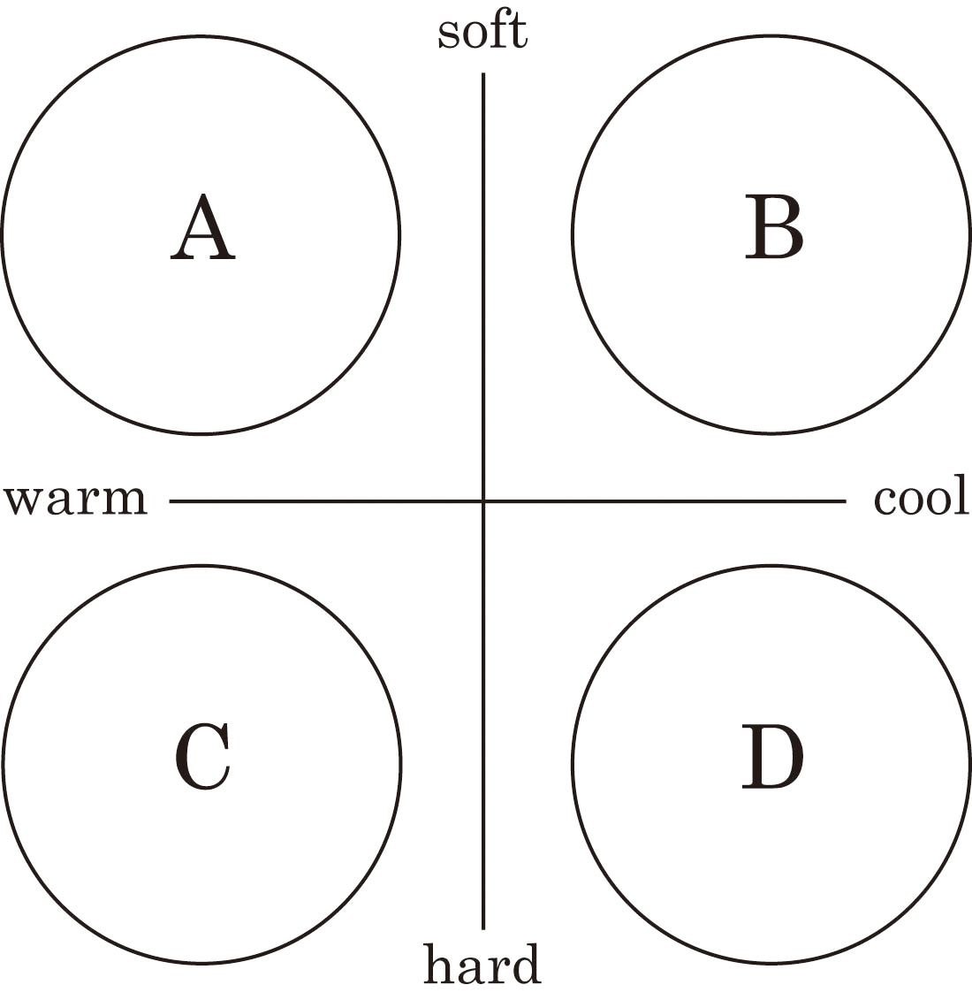
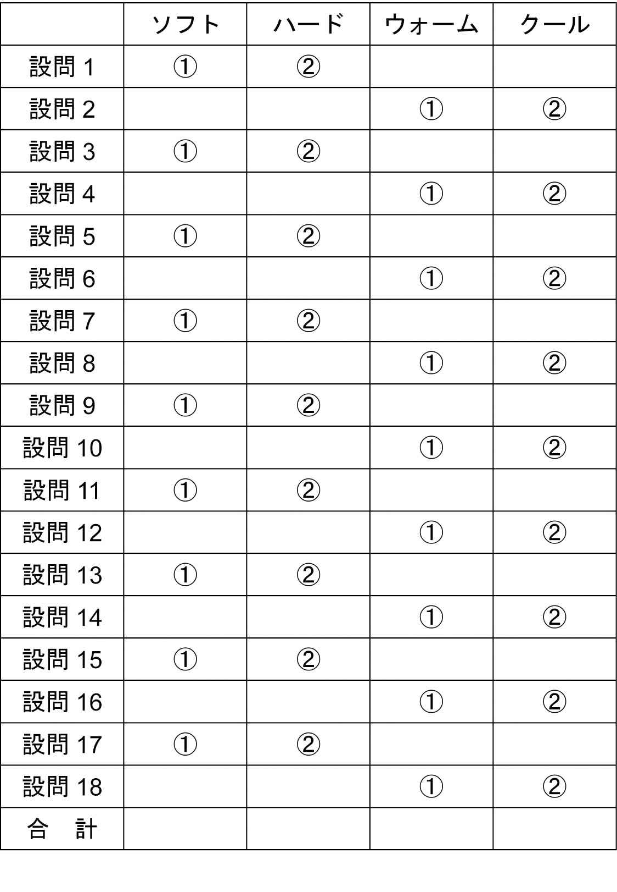

| 7秒でグッと心を掴む88の法則 (総合企画文庫) | |
| 唐澤理恵 | |
７秒でグッと心を掴む８８の法則唐澤 理恵 |
本作品は縦書きでレイアウトされています。
また、ご覧になるリーディングシステムにより、表示の差が認められることがあります。
本作品の全部あるいは一部を無断で複製・転載・配信・送信したり、ホームページ上に転載することを禁止します。
本作品の内容を無断で改変、改ざん等を行うことも禁止します。
また、有償・無償にかかわらず本作品を第三者に譲渡することはできません。
私が外見マネジメントに関心を持つきっかけとなったのは、前職の化粧品会社での経験が大きく影響しています。
訪問販売のその化粧品会社では、多くの女性が販売に携わっているわけですが、その中でも１０００万、１億と高い利益を上げている方たちは、成績を伸ばすごとに個性的で魅力的な外見に変わっていきます。化粧品に関わる仕事ですから当然といえば当然かもしれませんが、それにしても、「なぜ、人はこんなにも外見が変わっていくのか」と、いつも驚かされていました。
一方、取締役に就任してからは、多くの政財界の男性実力者とお会いする機会に恵まれましたが、そのときは先とは逆で、「なぜ、こんなにも外見を気にかけない、かつ没個性の人ばかりなのだろう」と疑問に思うばかりでした。
女性と男性、化粧品会社と政財界......と、性別や立場は違うかもしれませんが、男性たちがあまりに外見にかまわないことに、驚くと同時に、もったいないと感じていました。実力も人柄も素晴らしいのだから、外見にも気を遣えば、さらに高いレベルでの成功を勝ち得るに違いないと思えたからです。
そこで、私は外見をマネジメントする「パーソナルデザイン」の重要性をアピールしたいと、現在の仕事を立ち上げました。パーソナルデザインとは、単に外見をキレイにまとめ上げるだけのものではなく、その人の個性である内面をプラスにとらえ、それを外見に生かしていくための手法です。人は内面だけで、あるいは外見だけで成り立っているわけではありません。この両面が無理なく融合したときに、「その人らしさ」をアピールすることができるのです。
しかし、それを実現させるためには、容姿など自分の見た目は人にどう映っているのか、そして性格はどう思われているのかを、まずはそれぞれ客観的に知る必要があります。それらの分析をしたうえで、最終的に自分自身が望む「こうありたい自分」を外見に反映させることが大切なのです。それができたときに、みなさんはきっと、今まで持っていた「自分のよさが相手に伝わらない」といったもどかしさから脱却することができるでしょう。それはとりもなおさず、あなたの営業成績を上げる大きな力になることにほかならないのです。そして、人生が楽しく感じ始め、ツキが舞い込んできたような体験をすることになるでしょう。
インターネットやメールなど、直接顔を合わせないスタイルでの働き方が時代の趨勢（すうせい）となっている現代。しかし、ビジネスの基本が人と人とのコミュニケーションにあることは今も変わりはありません。とくに営業職に就いているなら人対人のコミュニケーションは、当然避けることはできないものです。もちろん、対お客様だけでなく、上司や同僚、後輩とのコミュニケーションも、仕事をスムーズに進めていくうえでおろそかにはできません。
では、ビジネスでコミュニケーションの核となるものは何でしょうか？ もちろん、個人の人間性（いわゆる「中身」であり「内面」と呼ばれるもの）で、たとえば情のある人、クールな人、押し出しの強い人、弱い人...といった性格的なものから、指導力、協調性、商品に対する知識、仕事への意欲といったものまでを包括したものがビジネスでの内面となります。
しかし、実際には、そうした「内面＝個性」は、すぐに理解してもらえるものではありません。「内面」をわかってもらうには、相手とのさまざまなやりとりの積み重ねが必要で、そうした共有する時間と経験の中で徐々に相手への理解を深めていくものなのです。出会った瞬間に、「この人はこういう性格の人」「仕事の実力はこうだ」などと、正しく中身を判断されることはほとんどあり得ません。しかし、現代のビジネスでは、スピードが求められます。悠長に時間を費やしながら相手の人間性をはかっていく、などということでは間に合いません。こうした自分の持つ「内面＝個性」を相手に早く理解してもらうことができれば、相手もそれに応じた接し方ができるわけで、必然的にコミュニケーションはスムーズに進むでしょう。だからこそ、瞬時のうちに自分の「内面＝個性」を明確に相手に伝えることが、現代のビジネスでは必要なのです。
会社と商品を売り込む前に、いかに自分を売り込めるかが、営業に携わる人間の鍵になります。
では、どのようにすれば、瞬時のうちに自分の「内面＝個性」を伝えることができるのでしょうか？ そこでポイントになるのが第一印象です。
ところで、「第一印象」とはどのようにしてもたらされると思いますか？ 「内面からかもし出されるもの」。そんな声が聞こえてきそうですが、本当でしょうか。
実は、第一印象とは、文字通り見た目の「外見」から得た印象を指します。外見とは、体型や顔の造作、髪型や服装などのことです。たとえば、筋肉の締まった体型で、眉もキリッと、髪型もこざっぱりまとめられ、服装も流行のスーツをさりげなく着こなしていたら、おおむね「時代の空気が読める、仕事のできる人、やる気のある人」といった印象を与えることができるでしょう。一方、締まりのない体型で、眉も髪もボサボサ、そして流行遅れのスーツを着ていたのでは、「仕事を任せるのはどうも......」と、相手に不安を与えるのは否めません。
しかも、この第一印象を決定づけるのは、驚くことに、わずか２秒から７秒程度の間だといわれています。まさに「一瞬」のうちに、人は外見だけで第一印象を判断してしまうのです。それにしても、なぜ、そんなわずかな時間で第一印象は決定できてしまうのでしょうか？
太古の昔、人は、外敵から身を守るために、瞬時に相手を「敵か味方」に判断しました。これは「好きか嫌いか」の感情が湧き起こることと共通するもので、非常にプリミティブな人間本来が持つ防衛本能とも言えるでしょう。本能であるだけに、判断に時間をかけることはしませんから、人は７秒程度のわずかな間に相手の印象を決定し、どう対応すればよいかを見極めるのです。
当然、そこには「理性」は働きません。あくまでも見た目の外見だけで、「この人はこういうタイプ。だから好き（味方）、嫌い（敵）」と、本能的に判断を下すわけです。
もちろん、人間は第一印象だけでその人を決定づけるわけではありません。顔の造作や服装といった外見以外にも、その人の心を投影した、つまり内面をにじませる表情や声、話し方や動作、振る舞いなども判断材料に加えます。こうした要素を加味して判断したものが、「第二印象」と呼ばれるものです。
たとえば、自分に自信のない人はどうしても声が小さくなり、腹の底から声は出にくいものです。目もきょろきょろと落ち着きがありません。反対に自信にあふれる人は、腹の底から声が出ていて遠くまで響きます。このように、声や表情、話し方、振る舞いなどからその人の内面を感じ取り、私たちはそれを第二印象ととらえるのです。
それがあるからなおさら、「外見で第一印象を落としたとしても、第二印象で挽回できるだろう」と、安心してしまいがちです。しかし、第二印象は、あくまで「第一印象が本当かどうかを確認するための作業」でしかなく、実際、その人の全体の印象を決定づけるのは、第一印象が７割、第二印象は３割だと言われています。しかも、第一印象は、無意識下の本能によって決定づけられるものだけに、第一印象で下した判断を覆すことは容易なことではありません。
だからこそ、人との出会い、コミュニケーションの出発点では、第一印象がとても重要になるわけです。内面に自信があるから外見などどうでもいい、というのは、すでにある程度の地位を確立し、確たる評価を得ている人だけが言える言葉でしょう。そうした人こそ、今後のさらなる成長を願い、外見をおざなりにしないものです。
内面に自信があるなら、その中身に見合った外見をデザインしていくことが重要です。外見がおろそかになっているばかりにコミュニケーションの出発点で正当に実力を評価されず、ビジネスチャンスを逃がしているとしたら、これほど残念なことはありません。
いくらあなたが「自分はこういう性格でこういう実力を持っている！」と訴えたところで、外見がそれを表していなければ、短い時間でわかってもらうことはできません。その人の印象を決定づける大きなファクターこそ第一印象、つまり、外見の印象なのです。そこで、外見をどうデザインしていくかを考えるうえでもっとも大切な、あなた自身の現在の外見の分析をすることにしましょう。
その判断基準となるのは、自己主張をあまりしないように見える「ソフト」と、自己主張が激しく見られる「ハード」を縦軸に、感情豊かで温かに見える「ウォーム」、冷静沈着に見える「クール」を横軸にして作り出された左の図にあるＡＢＣＤの４つのタイプです。さて、あなたはどのタイプでしょうか。

設問の答えを以下の表に当てはめてください。ソフトかハードの多いほう、ウォームかクールの多いほうがタイプになります。それを図の縦軸と横軸に記し、Ａ～Ｄのタイプを出してみてください。
１ 顔だちはどちらかといえばすっきりしている①はい ②いいえ
２ 目の位置は低いほうである①はい ②いいえ
３ 濃い顔だと言われたことがない①はい ②いいえ
４ 目と目の間が離れているほうである①はい ②いいえ
５ 口は小さいほうである①はい ②いいえ
６ 目はぱっちりしているほうである①はい ②いいえ
７ 眉は薄いほうである①はい ②いいえ
８ 冷たい印象だと言われたことはない①はい ②いいえ
９ 同僚と話していると聞く側に回っている①はい ②いいえ
１０ 上司からよくからかわれる①はい ②いいえ
１１ 肌色は白いほうか、黒いほうか①白いほう ②黒いほう
１２ 狸と狐、近い顔と言えば①狸 ②狐
１３ 猫と犬、近い顔と言えば①猫 ②犬
１４ 子供顔か、それとも大人顔か①子供顔 ②大人顔
１５ コリーとグレイハウンド、近い顔と言えば①コリー ②グレイハウンド
１６ ラブラドール・レトリーバーとシベリアン・ハスキー近い顔と言えば①ラブラドール・レトリーバー ②シベリアン・ハスキー
１７ パグとブルドッグ、近い顔と言えば①パグ ②ブルドッグ
１８ マルチーズとミニチュア・ダックスフンド、近い顔と言えば①マルチーズ ②ミニチュア・ダックスフンド

【Ａタイプ（ソフト＆ウォームタイプ）】
～素直でほがらか。どこかにあどけなさが残り、人に愛される印象～
・外見の印象目の下が短い子供顔。顔型、目鼻や口などの造作は丸みを帯び、顔の肉付きも豊かで、マルチーズやパグのような印象。まったく攻撃性を感じさせないため、周囲からはかわいがられ、見守られ、かまわれ、困ったときは助けを得やすいタイプ。
・内面との関係素直で人に甘え上手、かわいがられ上手。かつ芯の部分で自分を持ち、自立しているとよい。そうでないと、いじめの対象になりやすい。
・初対面での利点どことなく愛嬌があり、愛着を持たれやすい。この人のために何かしてあげたい......と思わせれば成功。
・注意点ヘアスタイルなど無造作になりすぎると未熟で弱弱しい印象になる。センスある装いが基本。
【Ｂタイプ（ソフト＆クールタイプ）】
～穏やかで冷静。知的で芯がしっかりした、安心感のある印象～
・外見の印象目の間は比較的狭く、目の位置も高い大人顔。優雅で品のあるコリーのような印象。地味で謙虚、でしゃばらず人の話をじっくり聞きそうに見える。
それでいて、自分をしっかり持ち、冷静で鋭い判断力があり、ひそかに重宝がられるタイプ。
・内面との関係内面も外見同様であり、コツコツと着実に仕事を進めていけば、完璧な個性として輝きを増す。逆に、内面に甘さがあり、ちょっと手を抜くと見かけ倒しと思われて損をする。
・初対面での利点確実な仕事をする、任せておけると信頼される傾向が強い。自己主張しすぎない印象からも経理や財務、分析など緻密な仕事を任されやすい。
・注意点思慮深いがあっさりしていることがポイント。妙にこだわりすぎたり、頑固になると神経質な人と敬遠されがち。装いは、シンプルに。
【Ｃタイプ（ハード＆ウォームタイプ）】
～陽気で活発。のびのびと解放的で、頼りがいのある印象～
・外見の印象あごが張った角ばった顔に、眉はキリッと太く、小鼻も大きく唇も厚いラブラドールのような印象。体格もよく、風邪ひとつひかないたくましさが感じられる。元気で明るく健康的で、誰からも好感を持たれる熱意あふれる体育会系タイプ。
・内面との関係のびのびとおおらかな性格、それでいて間違ったことを許さない正義感を期待される。健康であることも必須条件。それだけに、意外と神経質だったり、臆病だったりすると、がっかりされる。健康と明るさをウリにすべき人。
・初対面での利点はつらつとした人柄、正義感の強さ、さわやかな印象は誰からも好感を持たれやすく、頼りにされる。おおらかで前向きな印象は、営業マンには得なところ。女性の場合は、さっぱりした印象で同性に好感度が高い。
・注意点不潔、無造作、がさつ、あつかましさといった点が表に出ると、セクハラ・パワハラ問題をまねきやすい。
【Ｄタイプ（ハード＆クールタイプ）】
～野性的でものおじしない。黙っていても存在感があり、華のある印象～
・外見の印象精悍ですっきりとした顔立ち。目鼻立ちがシャープで、余分な肉がないグレイハウンドのような印象。個性的で天才的な空気が人目をひく。謎めいた雰囲気、野性的な生命力と直観力の鋭さ、カリスマ性を感じさせるタイプ。
・内面との関係内面も外見同様、卓越した、ただものではない仕事ぶりだと上司も同僚も一目置く存在となる。早々に出世する可能性あり。意外と、おっちょこちょいなところもあると、誰も追随できないモテキャラとなる。
・初対面での利点とにかく目立つところ。そこにいるだけで、静かな存在感、オーラを放つ。王様や女王様の風格がある。
・注意点内面的に抜けたところがまったくないと敬遠され、いざというときに助けを得にくい。
「初対面」でグッと惹きつける魅力的な人、一方、まったく興味もわかない人。さらには二度と会いたくない人までいろいろです。営業という職での初対面は、その後のすべてを決めると言っても過言ではありません。印象が悪ければ、それを挽回するために無用な労力を使わなくてはなりません。いえ、挽回するチャンスを与えられればまだ救いはありますが、多くはそれさえも与えられず、「初対面の印象が悪い」と思われた時点でビジネスチャンスを失うこともよくあることです。だからこそ、初対面ではとにかく点数を稼ぐ必要があるのです。
あなたが客の立場だとしましょう。
出会いの出発点で、相手が仕事ができそうにない営業に見えた場合。つまり、センスのかけらもなく、だらしない格好、または、やる気を感じさせない顔つきや髪型などであったら、その後にいくら商品の優秀性を述べ、どれだけ客にメリットをもたらすビジネスかを説明しようと、客であるあなたは話を聞く気など、みじんも起こらなくなってしまうでしょう。もちろん営業は、そんな客であるあなたの態度を、「人を見る目がない」と責めることはできないはずです。
たとえば、コンビニエンスストアで陳列棚を眺めて、目に飛び込んでくるデザインの商品を手に取ってみる消費者行動。よほど商品内容が目的から離れていなければ、一度は購入してみるでしょう。一方、気にもならないデザインなら、目も止めずに通り過ぎるか、趣味の悪いデザインだけを記憶にとどめて通り過ぎるか、どちらかです。商品と人はもちろんその先のコミュニケーションは明らかに違うにしても、判断を下す最初の基準か「外見」であることは明らかで、それならまずは、パッと見の外見を見直してみることです。自分の外見がどうなっているかを振り返り、「あなた」という人間を最大限魅力的に、そして有効にアピールできるよう、改革してみることです。
あなたがこれまでに出会った人々の中でとても印象的で魅力的な人はどんなタイプの人でしたか？
人それぞれ好き嫌いは分かれるにせよ、みな、明確にその人のアイデンティティ（個性）があったことでしょう。ヘンに飾り立てた印象でもなく、わかりにくいボヤッとした印象でもなく、スパッとその人のありのままの姿がそこにはあったはずです。
テレビで活躍する俳優やタレントを見ていても、カリスマ性があると言われる北野武や長嶋茂雄、浜崎あゆみ、中田英寿といった人たちは、みな、ありのままの個性的な自分を上手にアピールしています。
プロローグで書いた４つのどのタイプに、自分の外見が当てはまるのか、つまり、生まれ持った自分の外見を把握することから始めてみましょう。
そして、自分の内面を見つめ、ありのままの自分とは何かを内観、そして外観することが大切です。
今の髪型や服装表現がまったく異なるものを求めてはいないか、ちぐはぐな印象をつくってはいないか、などもチェックポイントになります。もともとの顔立ちが野性的であるにもかかわらず、かわいらしい女性に憧れ、メルヘン風に装っていませんか。外見が幼いからといって、なめられないようにやけに突っ張って見せたりしていませんか。顔が長いからといって、髪を伸ばしてごまかそうとしていませんか。髪が薄くなったからといって、無理に隠そうとしていませんか。
まずはテクニックの前に、ありのままの自分で勝負する勇気を持つことからスタートです。魅力ある人というのは、自分のすべての個性を前向きにとらえ、欠点と向き合い、それを長所に変える力がある人です。それは内面だけではなく、外見においても同じことが言えるのです。
恋の場合なら、外見と内面にギャップがあっても、「こんな一面があったの？」と、新鮮にとらえられるかもしれません。しかし、ビジネスでは、外見と内面のギャップはないに越したことはありません。
第一印象が悪いために商談が進まなくなる、というのがその一番の理由ですが、そこまでいかなくても、「最初の印象はこうだったのに、どうも中身はそうではないらしい。期待はずれか？」と、相手が混乱してしまうからです。新商品を例に挙げても、デザイナーはいかにその商品の中身のよさをデザインに表現するのかをまず考えます。つまり、外見と内面を一致させることから始めるのです。そのうえで、その表現がインパクトをもって受け入れられるかに考えを進ませます。
それは人であっても同じ。相手に余計な混乱を与えず、ストレートに自分を評価してもらうためにも、外見と内面のギャップはできるだけないほうがよいのです。
外見と内面のギャップについて多く見られるのが、「中身はよいのに、外見がやぼったく精彩に欠けている」というケース。この場合は、中身に合わせて外見を修正していけばよいのですが、反対の場合もあります。それは、「中身は結構繊細なのに、外見が気っ風よく大胆に見える」といったケースです。こうした場合は、初対面では高得点を得られるものの、次第にその繊細さが仕事の進め方に露呈してくると、たとえそれが長所だとしても、相手は期待を裏切られたような気持ちになるはずです。当事者にしても、最初は受けがよかったのに、いつのまにか点数が減点されていく自分を見ていけば、大きな自信喪失にもつながります。いずれにしても、外見と内面でギャップがあるのは、マイナス。好かれる人、カリスマと呼ばれる人は、ありのままの自分をそのままさらけ出している人、と言いましたが、それは「わかりやすい」からです。その意味からも、外見と内面のギャップはできるだけなくすことが大事なのです。
たとえば、会議であなたがプレゼンテーションを行っている風景を映したビデオがあったとします。あなたはそれを積極的に見たいと思いますか？
日本人の多くが自分の姿を客観的に見るのを嫌がる傾向にあります。自分の姿が画面に映った瞬間、まるで断末魔のごとくの悲鳴をあげ、目を伏せてしまうのが多くの日本人なのです。ところが、欧米人の場合は、自分の姿を客観的に見るチャンス、とばかりに、画面に映った白分の姿をじ～っと観察し、「しゃべり方がヘンだね」などと他人を語るように客観的に批評することができます。日本人と欧米人のこの違いはどこにあるのでしょう。
欧米人は言うまでもなく、人種も考え方も異なる環境の中で生き、さらに企業は実力成果主義ですから、自分が人からどう見られているか、自分をアピールするにはどんなプレゼンテーションが必要なのかを常に考える習慣があります。
ところが、島国で価値観もそれほど違わない人間の中で生きてきた日本人は、あえて自分をアピールしなくても、あうんの呼吸でわかってもらうことができ、しかも、企業は年功序列の終身雇用制でしたから、わざわざ自分が人にどう映っているかなど考えなくても済んだのです。
しかし、今の日本は、生き方も考え方もその価値観は多様化し、「あうんの呼吸」でコミュニケーションを取ることは難しくなっています。さらに、終身雇用は崩れ、多くの企業が成果主義へと移行しています。そのため、転職は日常的に行われ、初対面として新しい人と対するシーンは昔以上に増えているはずです。
つまり、昔のように「つき合えばわかってくれる」なんて悠長に言っていられなくなっているのです。それを考えても、他人の中にいるときの自分がどう映っているか、を研究してみる必要があるでしょう。自分の姿をビデオなどで見る機会があれば、チャンスと思って客観的にチェックし、有効に活用すべきです。
人は、第一印象を７秒程度のわずかな時間で決定してしまいますが、そのおおもとになっているのが、人間の無意識の感覚です。私たちが生まれたばかりの赤ちゃんの頃、無意識にいろいろなことを感じていたはずです。これは動物と同様に非常に鋭いもので、その無意識の感覚に信号を送っているのが、五感と呼ばれる視覚、聴覚、嗅覚、味覚、触覚です。
たとえば、出会った瞬間、その相手が二日酔いでお酒の臭いをぷんぷんさせていたら、それだけでそばに寄りたくなくなります。あるいは、頭のてっぺんから出ているようなキンキン声なら、こちらの神経まで逆なでされ、イライラした気分になってしまうでしょう。
このように、コミュニケーションを取ろうとするとき、視覚、聴覚、嗅覚、味覚、触覚のすべてが働くことで、相手がどんな人間かをとらえようとする本能が備えられているのです。私たち人間は、視覚で判断する能力に長けていて、第一印象の決め手の５５％が視覚に訴えています。そこで重要なのが、視覚は、ネクタイや髪型といった細かい部分ではなく、「全体」によって印象づけられるという点です。なぜなら、瞬間的に印象をとらえるためには、総合的な視点が必要になり、そのため、人間は、無意識のうちにその人の全体を一瞬のうちに目に焼きつけ、答えを出してしまうからです。
つまり、このネクタイがオシャレだからつけてみよう、トレンドのメガネでセンスを上げよう、と一生懸命部分部分にこだわっても、それらがトータルになじんでいなければ、パーツだけが印象に残り、結局、「あのメガネの人」などと呼ばれることにもなりかねません。
ファッションでは、よく「トータルコーディネート」という言葉が使われますが、まさに外見とは、部分ではなくトータルに考えなければならないのです。
あなたはオシャレをすることに抵抗がありますか？ ファッション・トレンドを意識したり、取り入れようとすることに消極的ではありませんか？
最近は、ファッション指南を満載した男性誌が女性誌に負けず雑誌コーナーを賑わしています。このことからも、オシャレに意識の高い男性が増えているのは事実のようですが、しかし、それでも女性に比べたら、本当にオシャレと言える男性はまだまだ少ないように感じます、
もちろん、すべての人がトレンドを意識したオシャレをする必要はないと思います。たとえば、内面に素朴さを持ち、それを職業的に自分のアピールポイントにしたい人なら、むしろ、都会的なオシャレをする必要はないでしょう。服装からも土の匂いを感じさせることが、その人らしい「外見」になるからです。ですが、営業職に就く人であれば、やはりある程度のトレンドは意識し、それをうまく取り入れる気持ちは持っていてほしいものです。
オシャレに無頓着なのは、「マーケットに鈍感な人」という印象を与え、営業職にはマイナスです。また、「他人の目を意識しない傲慢さ」にもつながり、コミュニケーションを取る気がない、と思われても仕方ありません。自分を成長させる気のない意識の低い人、と思われる可能性だってあるでしょう。
さらに、オシャレは文字通り、その人のセンスを表すものです。どんなアイテムや色を好み、どのようにしてそれを着こなすかは、１０人いれば１０人が違うはずで、つまりは、その人の内面がカタチとして表出されているとも言えます。その意味で、自分の顔カタチ、体型、キャラクターに合わない服装をしている、いわゆる「センスのない人」は、厳しい言い方をするなら、仕事にもセンスがないのです。オシャレを侮るなかれ。ファッションで、仕事に対する姿勢や実力までも読みとることができます。あなたが考えている以上に奥が深いのです。
オシャレに関して、まったく無頓着な人がいる一方で、「行きすぎ」の人も多く見受けられます。最近ではメトロセクシャル、と呼ばれる人々も登場しています。
なかでも、トレンドのブランドで全身を固め、頭の堅い上司から「ファッションしか頭にないのでは？」と思われている人がよくいるものです、もちろん、収入にも仕事の実力にも見合わないオシャレは、自分を実際以上に高く評価してもらいたいがための見栄でしかないのですが、しかしこの「見栄」も、ある程度は持つことが必要なのです。
「それでは内面と外見のギャップを作るな、という話と矛盾する」と思う方もいるでしょう。けれど、若い方の場合はあえてそれでもよいと言っておきます。ただし行きすぎは禁物。「指先程度」の見栄であることが条件です。
なぜなら、「指先程度」の見栄であれば、若いが故に背伸びをしたい年頃と、好意的にとらえてもらえるからです。また、その程度の見栄なら、ちょっと背伸びをした外見に内面を合致させることも十分可能です。今は中身が外見に見合っていなくても、成長著しい若い時期なら、外見に追いつく日はそう遠くはないはずです。相手も、外見に比べて中身がちょっと足りないな、と感じたとしても、がんばっている若者の姿としてとらえ、期待はずれ、とは思わないでしょう。要は、たとえ動機が見栄であっても、高く評価してほしい、という気持ちは、うまく出れば向上心につながるもの。外見に見合う自分に成長したいという、その気持ちが大事なのです。反対に、心配すべきは、「外見など気にしなくていい」という考え方のほうでしょう。たとえ、中身が十分に立派だとしても、外見など気にしなくてもいい、と思った瞬間から成長を止めることになってしまいます。人間の成長は、どんなに年を重ねても、終わりはありません。「これでいい」などと思わず、いつまでも指先程度の見栄を張るくらいの気構えは失いたくないものです。
服や髪型以外の見た目で人の印象を左右するものに、振る舞いや動作があります。たとえば、椅子に座るときの振る舞いひとつとっても、ガタガタと平気で音を立てて無神経に行うようであれば、ガサツな人、乱暴な人、無礼な人といった印象を与えることになるでしょう。反対に、椅子を引くときの音にまで気を遣い、丁寧に行うことができれば、細かいところまで気配りができる、安心感の持てる人、と映るかもしれません。振る舞いひとつで好印象、悪印象が決まることが多いので、服装などと同様に十分、注意することです。
また、もうひとつ気をつけておきたいのが、気がつかないうちに出ている動きのクセです、たとえば、話の間中、ノック式ペンのノックをカチカチ打っている人や、貧乏揺すりをいつまでも続けている人をよく見かけますが、これが印象を落とす引き金になっているのを本人たちはあまり意識していないようです。
初対面でなくても、こうした動きのクセを出されてしまうと確かにこちらは不快に感じるものです。それはなぜでしょうか。
ひとつは、「気もそぞろ」の感じがして、礼を失された気分になるからでしょう。
もうひとつは、無意識的に不快感を与えるからです。ノック式ペンを繰り返し打つ連続音、貧乏揺すりの連続動作など、クセになっている動きのほとんどに一定のリズムが刻まれています。この「一定のリズム」がくせ者で、聞かされ続けると、私たちは本能的な刺激を受け、普段は意識していない不快な感覚が呼び覚まされてイライラしてしまうのです。
ただし、こうしたクセは、無意識のうちに行っているものだけに、当事者はなかなか気がつかないものです。チェックできるのは本人以外でしかなく、そのためにも、身近な人に「動きのクセはないか」と尋ねてみることが必要でしょう。そして、もしもあるとしたら、必ず直すように意識づけていくことです。
ビジネスでの初対面で大切なのは、部分ではなくトータルですが、その後、打ち合わせなどをしていく段階では、顔の印象が大変重要となります。顔の造作だけではなく、内面からにじみ出る表情もです。やる気や誠意が感じられれば、コミュニケーションの出発点としては成功と言えます。では、その印象をつくり出す重要なものは何でしょう。その要素はいくつもありますが、まず、意識しておきたいのが「眉」です。最近は男性にも眉を整える人が多くなりましたが、それはとてもよい傾向だと思います。なぜなら、眉は感情を端的に表すものだからです。
怒っているときは眉はつり上がり、神経が苛立っているときは眉根が閉じます。
また、積極的な気分のときには眉も自然にキリッとしてくるでしょう。それだけに、眉は形自体をある程度整えておくべきパーツなのです。
ちなみに、かつての村山首相のように、下向きに長く伸びている眉は、人生における経験を感じさせますが、勢いを求められる場合は落ち着きすぎた印象でマイナスです。また、眉と眉の間がほとんど距離のないつながった眉は、気むずかしく取っつきにくい印象を与えるため、営業職には不向きです。
眉の整え方ですが、目立って長い毛は、ハサミで適度な長さにカットします。
よく細く剃っている人を見かけますが、表情が薄っぺらく、冷ややかに見えるので避けましょう。もともと太い眉の人は、それが個性であり、やる気や頼もしさを表すため、できるだけ生かしたいもの。とはいえ一番大切なのは、持って生まれた眉の太さや濃さではなく、眉に上昇線があるということです。そのため、眉尻の下の部分をカットしておくことがもっとも望ましい整え方と言えます。
眉に自信が持てたら、眉が見える髪型にしておくことも重要なポイントです。眉が隠れてしまうと表情がとらえにくくなり、自身をアピールできません。髪型と眉の関係ひとつに、あなたのアピール力が関わってくるのです。
たとえば、うれしいとき、あなたの目はどうなっていると思いますか？ 少女マンガなどでは主人公の瞳にキラキラといくつもの星が描かれていますが、まさにそのとおり。人間の瞳というのは、あの星のように実は輝くのです。
その秘密は瞳孔にあります。うれしいときや前向きになっているときなど、気分が高揚しているときは、アドレナリンがわき出て瞳孔が大きく開き、瞳の内側の黒い部分が拡大します。反対に、気分が落ち込んでいる状態では、瞳孔は小さく閉じ、黒い部分も小さくなります。活気や精彩がない人の目を「魚が死んだような目」などと表現しますが、これは瞳孔が閉じて瞳の輝きが失われている状態を表した言葉です。
初対面で「やる気のある人」と見てもらいたいなら、瞳孔を大きく開き、瞳を輝かせればよいのですが、形だけで表現することは容易ではありません。
では、どうしたら瞳を輝かせることができるのでしょうか。
瞳が輝くような気持ちを持てばいいのです。相手に興味を持ち、その人に会うことがうれしいと、人間関係を心から楽しむことです。それだけで自然に瞳孔は開くものなのです。恋愛初期に、その人と会うだけで心がときめき、多くを語らなくても相手を想っている気持ちが目から伝わることってありませんか？ それと同じです。初対面のときにも、その出会いを本心からうれしいと思えるのなら、自然に瞳は輝き、気持ちは必ず相手に伝わります。そして、目に喜びが表れれば、おのずと口元も微笑み、自然な笑顔ができるものです。表情や目が大事だからと、カタチから入るのもひとつの手法ですが、そこに気持ちがなければ、「ない」ものを伝えることはできないのです。
私たちの表情の輝きを作っているおおもとは、「気持ち」だということを、くれぐれも忘れないでください。
初対面で好感を持たれやすい人の一番の特徴は、その人の内面がストレートに外に現れていることです。ファッションしかり、髪型しかり。そして、それと同じくらい、内面を表すものが顔の表情です。眉や目からも表情はにじみ出ますが、それに加え、表情筋の動きも見逃せません。ちなみに、欧米人は、昔から日本人の表情をミステリアスと呼びます。これは欧米の男性が日本の女性に対する褒め言葉として使われています。つまり、表情が乏しいために、心がどこにあるかが読み取れず、あたかも「神秘のべールに包まれたよう」に、魅力的に感じられるのです。
ただしビジネスの場合は別。心が読みとれない無表情な顔は、心理戦による駆け引きの場を除けば、決してプラスには働きません。
初対面ならなおさら。日本人は往々にして無表情になりがちなので、損をすることが少なくありません。
では、どうすればもっと内面をストレートに映し出す、イキイキとした表情になれるのでしょう。まずは心を活性化させることが前提ですが、そのほかにも表情筋を柔らかくすることが大切です。身体と同様に、筋肉が硬く縮んでいては自由な動きは作れません。まずは柔軟体操から始めましょう。
縦の表情筋を柔軟に保つ具体的なトレーニング法は次の通りです。
鏡を前にして、口を突き出すようにしながら、大きく「ウ・オ・ア・エ・イ」と、声を出します。このとき、顔の筋肉を縦に動かしていることを必ず強く意識します。縦に動かすことで、目を大きく見開くことになるため、キリッとした目元も生まれ、さらには顔の血流もよくなり、頭もすっきりするはずです。毎日、出勤前に行えば、豊かな表情が生み出され、その日の出会いを好印象にすることができるでしょう。
初対面でパッとしないと思ったとしても、声を発したとたん、グッと惹きつけられた経験はありませんか？ また、その逆で、見た目がよくても声を発したとたん、がっかりすることもあったのではないでしょうか。
声とはそれほどまでに初対面の印象に影響します。南カリフォルニア大学のメラビアン教授による「メラビアンの法則」によると、５５％が見た目、３８％が耳で聞いた印象がその人のプレゼンテーションのよしあしに響いてくるのです。
さらに、私たちは、話し方を気にしがちですが、それ以上に「声」という音現像のほうが、本能を刺激していることを忘れてはいけません。
声は、呼吸からつくられるものです。深い呼吸による朗々とした歌声は、こちらまで大らかな気持ちになりますが、逆に口先だけの歌は、聞き続けていると気分が悪くなります。もっとも声を発している本人が気分よくはないはずですから、こちらに伝わってしまうのも無理はありません。
当然、もともとの声質はありますが、声というのは明るさや優しさ、厳しさを表すものです。つまり声にもそれだけの表情があるわけです。たとえば深い深呼吸によって出ている声は、相手をリラックスさせ、気持ちを開かせる効果があります。ですから、声は腹から出す必要があるのです。
また、声を出すときの精神状態も、密接な関わりがあります。リラックスしていれば声は出しやすくなりますが、あせったり、自信がなかったり、緊張したりすると、自然に呼吸が浅くなり、口先やのど、あるいは胸から声を発してしまうのです。プレゼンなどで声がうわずるのはそのためです。
どんなときでも腹で呼吸ができるよう、日頃から鍛えておくことが重要です。
「腹が据わった」「腹が決まった」「太っ腹」な声は、それだけで相手に対する説得力を持つのです。
どんなに見た目をそれらしく整えたとしても、コミュニケーションは奥の深いものです。相手を思う気持ちがそこになければ、初対面での印象はよくはならないはずです。
では、相手を思う気持ちを表すためには何を心がければよいのでしょうか。
それは、言うまでもなくマナーです。マナーなどというと、堅苦しいルール、気取ったもの、ととらえるかもしれませんが、そうではありません。相手が心地よくいられるように気遣ってあげることがマナーなのです。
たとえば、相手とエスカレーターに乗る場合。それが下りであれば、あなたのほうが先に乗ります。反対に昇りであれば、あなたは後に乗ります。
何でも相手を先に、というのは間違いで、下りであなたが先に乗るのは、万が一相手が転倒したときに、それを受け止めることができるからです。同様に、昇りなら、あなたが相手の後ろにいれば、やはり受け止めることができますね。
席に座る場合も、上座下座があることは、当然、頭に入れておかなければなりませんが、必ずしも奥の席が上座とは限らないことも知っておきましょう。たとえ入り口に近い席だとしても、窓からの景色がもっとも美しい場所であるなら、そこが上座になることもあります。相手がそれを認識していない場合も想定して、「こちらのほうが景色がよろしいので」と、ひと言を添えて勧めれば完璧です。マナーとなると型どおりのマニュアルに従いがちですが、大切なのは相手の立場に立つこと。このほうが相手にとってベストな選択だと考えられる場合は、臨機応変にそれを優先することが一歩先ゆくマナーです。そうした血の通った心配りができることは、初対面で好印象を与える大きなポイントになるはずです。
ただし付け焼き刃でできるものではなく、日頃からの相手への心遣いとともに、スマートなふるまいを身につけておくことが大切です。
どんなに外見を整えたとしても、やる気のある表情を見せたとしても、これをやってしまったばかりにすべてが台無し、というものがあります。
それは、横柄に見える振る舞い。腕組みをしたり足を組む人を見かけますが、初対面の人の前では御法度と思ってください。腕組みは、自信のなさを相手に見透かされないために出る「防衛本能」と言えますが、相手はそうは解釈してくれません。単に相手を拒絶している、としか思わないでしょう。初対面で好感を高めるには、何はともあれ、話を聞く素直さと相手への興味を持つことが大事です。
せっかくその心があっても、無意識に腕組みや足組みをすることで誤解を受けてしまえば、残念以外の何物でもありません。くれぐれも注意してください。
上司の役目とは、部下をうまく使ってビジネスの成果を上げる、このことに尽きます。
「うまく使って」などというと身も蓋もありませんが、しかし、部下であるあなたにしても、「仕事は任されてナンボ」。上司から責任ある仕事を任されないようでは、存在意義がないのと同じです。
では、上司にうまくあなたを使ってもらうために何が必要でしょうか？ 言うまでもなく、あなたの能力を正確に把握してもらうことです。しかし、長年コンビを組んできた間柄ならそれも可能でしょうが、組織に異動はつきものです。いつでも正確にあなたの能力を判断してくれる上司がいるとは限らないのです。
だからこそ、部下のあなたには、上司に自分の才能や能力をすぐに把握してもらうためのワザが求められます。
それは、上司に対してわかりやすく自分を外見からアピールすること。もちろん、オシャレをするという意味ではありません。
「自分が目指すビジネスでの方向性を明確化し、それを意思表示する方法として外見に表す」ことです。
ですから、まずは、自分はどういう方向性で仕事をしていきたいのか、組織の中でどんなポジションでありたいのかを考える必要があります。
さらに、持って生まれた容姿や体型など、自分の外見は上司からどう見られているのかを分析することも大事です。
そのうえで、目指す方向性と外見をどうすり合わせていくかを考えます。そして、誰もが必要とすることは、目指す自分を実現するために学ぶという姿勢を持つことです。このふたつが揃うことで、あなたの上司からのウケは、格段に変わってくるはずです。
たとえあなたが社内でリーダーシップを取る自信がなかったとしても、いかにもそれができるような頼もしい印象があれば、上司は当然、あなたにリーダー的な役割を持たせようと思うでしょう。しかし、実際はその自信がないわけですから、なるべく目立たないように振る舞ってしまう。そんな経験はありませんか？
学生時代、解けそうにない問題で先生から当てられそうになり、思わず首をすくめ、背筋を曲げて机に伏せてしまった経験と同じでしょう。背が人一倍高く、目立つ人に猫背が多いのも一つの要因です。
さて、この場合、人はふたつのタイプに分かれていきます。
ひとつは、自信がなくても与えられた使命や命令を果たすため、最大の努力をすることで、外見の印象同様、内面が成長していくタイプです。
もうひとつは、せっかく与えられた使命を自信がないからと断ってしまい、なんて自分はダメなんだと卑下してしまい、なるべく目立たないように振る舞い続けていくタイプです。
人よりずば抜けて堂々とした体格、精悍な顔立ちなのに、なぜか気弱な表情。
活気のない顔つき、引っ込み思案な印象を与える人は、まさに後者のタイプです。
せっかく与えられた、持って生まれた肉体を生かし切れていないのが残念で仕方ありません。
今からでも決して遅くはありません。上司から何かを指示されたということは、そこにできるだろうという期待があるということです。
少なくとも、それらしい印象を与えることができたのだと受け止め、チャレンジすることが大切です。
内面を成長させてくれるのが外見であると素直に受け止め、持って生まれた外見を生かしていきましょう。
前のページで持って生まれた外見を生かすべきだと書きましたが、逆に、もともとの外見を逆手に取って見事に成功している人もいます。
たとえば、背もそれほど高くはなく、童顔でかわいらしい顔立ちであるにもかかわらず、堂々とした姿勢、精悍な顔つき、目がキラキラと輝き、いざというときの判断が鋭い人。とかく人柄も素晴らしく、品のよさも備わり、文句のつけるところが見あたらないような人がいるものです。
そういう人は、たいがい小さい頃から背が低く、目立たず、引き合いに出されることも少なかったために、自らすすんでアピールする必要があったことで、人一倍負けん気が育ち、一生懸命努力して内面を成長させる結果となったわけです。
企業経営者など、社会の中でもある程度の地位に就いている人に多く見られるケースです。
このタイプは、もともとの外見が自分の向かう方向として備わっていなかったことを逆手に取り、その分内面を向上させ、その結果、内面が振る舞いや顔つきの第二印象ににじみ出てきているのです。そうなると、外見が与える第一印象まで、持って生まれた容姿を見事に超越し、かっこよく見えてしまうから不思議なものです。
しかしながら、こんな人はごくわずかです。一般的には、持って生まれた外見をうらみ、人ばかりをねたみ、なんの努力もしようとしない人が多いのではないでしょうか。結局、何をしてもダメだと人生まであきらめてしまったり......。そうなると問題は、外見そのものではなく、悲観ばかりして努力しようとしない内面にあると言わざるを得ません。外見は、心の持ち方でいくらでも変えられるのだということを、覚えておいてください。
性格、つまり内面が外見に現れるわけですが、言い換えれば内面は、顔つき、体つき、声が作り上げているとも言えます。たとえば、お人形のようにかわいい容姿に恵まれた女の子は、「かわいいね」と言われて育つため、自然に甘え上手になります。すなわち外見がＡタイプ（ソフト＆ウォーム）であるなら、先生や上司にかわいがられて成長する、素直でおおらかなタイプが多いと言えるでしょう。ところが、人間は、ありのままの自分で生き続けることはなかなか難しいものです。男だからこうあらねばならない、女だからこうあるべきと、社会の枠組みの中にはめこまれ、まっすぐに個性を育てることは容易ではありません。Ａタイプであったとしても、かわいがられることをよしとせず、妙に攻撃的になってしまう人もいるのです。
Ｃタイプ〔ハード＆ウォーム）のように情熱的で頼もしい容姿や体型を持って生まれたにもかかわらず、感情を抑えられて育てば、性格はおとなしく、表情にも自信のなさが垣間見えてしまうものです。
Ｂタイプ（ソフト＆クール）のようにきちんとした誠実な容姿を持って生まれたとしても、ずるがしこさを持たなければ生きられない環境で育てられたなら、やはり容姿とは裏腹にどこか冷ややかでゆがんだ表情や振る舞いが現れてくるものです。そして、上司から見ると、どんな人間で、どんな仕事を任せていいのか、混乱してしまうわけです。こうして私たちは、知らず知らずのうちにもうひとりの自分をつくりあげ、マイナス面が出てしまう場合があります。そして、これからも役職に就くたびに、自分づくりを繰り返していきます。
まずは、外見の造作の印象を知り、つくりあげられた第二印象を知り、そして、内面と目指したい方向を明確にすることで、上司から仕事を任されやすい状態をつくっておくことです。
同じ能力でも、上司から睨まれやすい人、そうでない人に分かれるものですが、その違いは、やはり、ここでも外見と内面が関係しています。外見と内面が一致している人の場合、よほど態度が悪ければ話は別ですが、そうでなければ、睨まれるなどということはそうそうあるものではありません。
しかし、外見の印象と内面が大きく違った場合はその危険も生まれます。外見の印象から下した判断と実際の中身が違っていたとなると、「飼い犬に手を噛まれた」、あるいは「期待を裏切られた」と、いずれにしても、期待はずれという気持ちには変わりなく、その部下に対する感情は次第に変化していくものなのです。
もちろん、それは、上司の勝手な言い分に過ぎないのですが、しかし、自分のつくりあげたイメージに収まらないものには、往々にして不快感が生まれやすいのです。だからこそ、まずは外見と内面を一致させておくことが大事なのです。
●Ａタイプの人の課題
Ａタイプ（ソフト＆ウォーム）の人の外見印象は、人を欺かない素直さとかわいげ、いたずらっぽい部分があることです。どちらかというと、目鼻や口などの顔の造作は丸みを帯び、顔の肉付きも豊かで、マルチーズやパグのような外見。そんな攻撃性を感じさせない外見は、お笑いで言えば「ボケ役」ですから、上司としては何かとかまいたくなり、かわいがりたくもなるものです。多少仕事の成果が悪いときでも、「しょうがないか」と、わりあい大目に受け止めてくれますし、かばってもくれやすいのです。仕事では過剰な期待はしないものの、場をなごませてくれれば上司は満足。その外見に対して「納得感」を得ることができます。
２０代ならこれを生かしてそのまま成長していけばいいですが、３０代になり、同期が役職に就き始める頃から、独り立ちするための課題が生じます。
また、そんなかわいらしい外見に反し、内面が非常に強く、あたかも攻撃するような切れ味で自己主張をするとしたら、上司は「なんだ、生意気な」と、腹を立てることでしょう。ペットのような外見は、すなわち上司の言うことを素直に聞き、配下として収まることをアピールしているようなものです。内面が違うとなれば、必要以上の反感となって返ってくるのは容易に想像がつきます。パワーハラスメントをもっとも受けやすいタイプとも言えるのです。
●Ｂタイプの人の課題
Ｂタイプ（ソフト＆クール）の人の外見印象は、主体的に動くより、与えられた仕事をコツコツ忠実に遂行する生真面目さです。つまり、地味で目立たないのが持ち味であり、頼もしさや強い個性を人に感じさせることはありません。そのため、上司からすると、チャレンジ性の高い仕事を任せる気にはなりませんが、完璧さを求める重要な仕事では、大きなミスをせずこなすだろう、という安心感を持ちます。それだけに、凡ミスをしたり、ルーズな態度を少しでも見せたら大変。評価はぐんと下がり、ひそかに睨みがきつくなるでしょう。
もともとＢタイプは、その几帳面さや生真面目さが神経質に映り、上司はつい放っておきがちになるのですが、外見に見られる「忠実さ」や「きめ細かさ」をおおいに評価しているはずです。与えられた仕事をきちんと正確にこなすことができれば、睨まれることはまったくないのです、Ｂタイプの外見を持ったばかりに、たった一度の遅刻さえも命取りになりかねない。これがＢタイプの課題のひとつと言えます。
また、上司が叱りにくい外見でもあり、放っておかれることが多いかもしれませんが、それをいいことに内面の成長のための努力を怠ってしまうことも、よくある課題となります。
●Ｃタイプの人の課題
Ｃタイプ（ハード＆ウォーム）の人の外見印象は、眉はキリッと太く、小鼻も大きく唇も厚い体育会系。体格もよく、風邪ひとつひかないたくましさを、その外見から感じさせます。こうした外見がつくり上げる部下像は、義理人情に厚く、ガッツのある「部活の後輩」。上司の言うことは絶対で、身体を張ってでも遂行するような頼もしさや、上司への奉仕精神の強さを感じさせるのです。そんな外見的印象を与えているにもかかわらず、たとえば飲み会などで場を盛り上げようともせず、クールに構えた態度を取りでもしたら、即刻怒鳴られることは間違いありません。精神的にも体力的にも相手にタフさを感じさせないと、見た目の印象との違いに、上司は失望を覚えてしまうでしょう。その意味で、風邪ひとつひけないのがこのＣタイプ。上司からの期待が大きいだけに、外見の印象を裏切ったときの代償はこれまた大きいものなのです。
また、Ａタイプと似ている部分があり、かわいがられ、配下に置かれやすいとも言えます。そこに頼もしさが加わることで、上司から怒鳴られやすかったり、雑用や尻ぬぐいのようなことをさせられやすくなるのがこのタイプなのです。とんでもない上司にかわいがられてしまうと命取りになるので、とことんついていっていい上司か、見極める目も必要です。
●Ｄタイプの人の課題
Ｄタイプ（ハード＆クール）の人の外見印象は、個性的でアクは強いものの、頭も切れて指導力もあり、仕事の能力もありそうな野性的なところ。容姿や体型からストレートに伝わってきます。そんな外見を持つため、気の弱い上司であれば、すでに危険を感じ、ひどいときには「引きずり落とされるのではないか」と勝手に戦々恐々となっているかもしれません。実際のところ、Ｄタイプは、上司からすると扱いにくいと思われる外見タイプで、期待感とともに、その動向に注目されやすいタイプとも言えます。
実際の実力がその外見に見合っていれば、「なかなかおもしろいやつだ」と、一目置かせることができるのもこのタイプです。だからこそ、内面は重要。外見通りの能力を持たないことがわかったときには、今まで戦々恐々とさせられていた分、睨まれるどころか、「格好だけか」と、攻撃されることにもなりかねません。
Ｄタイプの外見の人は、ほかのタイプ以上に実力や人間性が求められるのです。
これまで述べてきたように、各タイプ別にコミュニケーションの課題はありますが、それを逆手に取り、上司や同僚を味方につける方法もあります。
●Ａタイプは愛嬌でしたたかに泳ぎ切る
癒し系のＡタイプ（ソフト＆ウォーム）の人は、内面も外見にともなっていれば、周囲からも上司からも好かれやすい、という特徴を持ちます。しかも、絶対に拒絶しない、という安心感を与えるため、仕事ができる人ならどんどん仕事を頼まれ、にっちもさっちもいかなくなる可能性も高いのです。
上手にさりげなく断ることができればいいですが、そうでない場合は仕事を抱えすぎて、つぶれてしまいかねません。よく、昨日までにこにこ仕事をしていたのに、ある日、ふっと会社に来なくなった......という話を聞きますが、こうした状況に陥ったときに起こりがちな悲劇です。要は、にこにこしているように見えるその顔からは、本人の苦しみは、誰も想像できないのです。
では、それを防ぐためには、どのように防御していけばよいでしょうか。
仕事を頼まれすぎている、と自覚したら、周囲に手伝ってもらえばよいのです。Ａタイプは、確かに頼まれやすいところが課題ではあるのですが、ＳＯＳを出せば助けてもらいやすいのも特徴なのです。
その人なつっこいかわいらしさは、いざというときに手を差し伸べたい、と思わせる最大の武器となるのです。だから、自分ひとりで抱え込まず、素直に「手伝って」と頼めばよいのです。もちろん、そのためには、愛嬌は欠かせません。笑顔はあなたの外見タイプのよさをもっとも引き出してくれる最大の武器だからです。ただし、始終ニタついてばかりでは、なめられて終わり。ここぞ、という勝負時には、笑わないことも覚えておくべきです。
●Ｂタイプは誠実さをカタチで示し、存在感をアピール
存在感が少々薄く、与えられた仕事を黙々と生真面目にこなすイメージのあるＢタイプ（ソフト＆クール）。ほかの人が面倒がってやらないような仕事を押しつけられる可能性も大きいでしょう。
その生真面目なイメージが、どんな仕事を与えても、きちんとこなしてくれるだろう、という信頼感を与えるため仕事を押しつけられるのでしょう。また、存在自体に自己主張がないため、何を求めているのか、上司が読み取れないことも理由に挙げられます。
たとえば、Ｂタイプのあなたが、自分の処理能力を超えた量の仕事を頼まれるハメになったらどうしますか？
このタイプの人は、毅然と断ってよいのです。ある程度クールな印象もありますから、冷静にできない理由を述べれは、上司はそれほど裏切られたような気持ちにはならないはずです。
ただし、「受けた仕事はきっちりこなす」。これが前提です。そうした信頼があるからこそ、「これ以上受けてもできません」の言葉に、上司も納得するのだということを覚えておきましょう。
とはいえ、与えられた仕事だけでは満足がいかない場合もあるはずです。そんなときは、当然ながら自己主張が必要です。しかし、押しの強さが足りない外見Ｂタイプの人にとって、正攻法な自己主張は効果的ではありません。それよりも、やりたい分野の仕事について、つねに先を読み、データを取るなり分析をするなり、あらかじめ手がけておくことのほうが大事です。「こんなことも必要かと思い、やっておきました」と提出することができれば、その存在を違和感なくアピールすることができるでしょう。
感情的に、他の仕事をやりたい、と言っても上司の心に届きにくいＢタイプは、カタチにして見せることが一番のアピール法です。
優等生的な外見イメージのおかげで、もともと仕事への評価は高いのですから、カタチがあれば鬼に金棒なのです。
●Ｃタイプは上司を肯定し続けて這い上がる
感情豊かでストレート。考えていることがよくわかり、義理人情にも厚そうに見えるＣタイプ（ハード＆ウォーム）は、多少、雑に扱ってもへこたれない打たれ強さを感じさせるため、上司にとっては頼もしい部下になり得ます。腹心の部下としてかわいがりますが、それだけに何でも仕事を言いつけ、ときには私用の用事まで頼むことも。飲み会の幹事から引っ越しの手伝いまで、そのリクエストは多岐にわたります。もちろんそれは、期待をかけてのことです。
ありがたいといえばありがたい評価ではありますが、「仕事は仕事。プライベートは大事にしたい」と思うのも当然のことでしょう。だからといって、自分の用事を優先したら、即刻大きな減点となってしまうのが、このタイプなのです。ましてや、上司が誘った飲み会を断ろうものなら、もう次の誘いはありません。上司の誘いを断るということは、二度と目をかけられることはないことを意味しているのです。
体育会系のＣタイプには上下関係を大切にするイメージがあるからでしょう。
必然的に上司を肯定し続ける役割を期待されてしまい、「仕事は俺の背中を見て覚えろ」とでも言うように、上司はＣタイプを引っ張り回します。身体で経験させ、自分の分身のように育てようとするのです。それだけに上司に対しては絶対服従で、つき合いのよさは必須事項。「できない」「行けない」の断り文句は「どんな理由があろうともタブー」と、心しておかなければなりません。
また、上司に野心を見せることも禁物です。上司を蹴落とすそぶりでも見せようものなら、「せっかくかわいがってやったのに、恩を仇で返すのか」と、思われかねません。
しかし、それさえしなければ、もっとも目をかけてもらいやすい外見タイプ。
うまく貼り付いておけば、引き上げてもらいやすいし、出世もしやすいでしょう。
ミスをしたときでも、大らかに受け止めてもらえるというメリットもあります。
ただしその場合は、あくまで謙虚さを全面に出すことです。「一生懸命やりましたが、できませんでした！」「どういうふうにお詫びしていいか、わかりません！」と素直に、そして元気に詫びれば、許してもらえるあなたなのです。
●Ｄタイプは徹底的に実力を鍛え上げる
そこにいるだけで迫力ある存在感をかもし出すＤタイプ（ハード＆クール）。一目置かれる存在になりうるだけに、「生意気」と取るか「おもしろいヤツ」と取るかは、ある意味、上司の器次第と言えます。
生意気と取るような上司なら、Ｄタイプを「自分の立場を脅かす存在」として脅威に感じているはずですから、なるべく接触も持ちたくない、というのが本音。そのため、ほかのタイプに対するように、気軽に仕事を頼んだりはしないでしょう。仮に頼む場合は、仕事の目的を明確にし、スキを突かれないよう、バリアを張りつつ、理論武装もしつつ、頼むことになります。上司のほうが、それくらいの覚悟を持たなければ頼めないような存在感が、このタイプには歴然とあるのです。
ですから、基本的にＤタイプはほかのタイプに比べて雑用系の仕事は回ってこないはずです。来るのは、核になる重要な案件。量は少ないものの質は高い、というのがこのＤタイプに回ってくる仕事の特徴です。
あなたを生意気と思っている上司なら、「やれるものならやってみろ」といった気持ちが強いでしょう。あなたを「おもしろいヤツ」と好意的に受けて止めている上司なら、「その腕前を見たい」と期待をかけているはずです。
いずれにしろ、Ｄタイプはつねに第一線に立たされ、実力を試されることになる運命なのです。
さて、そんなＤタイプが、難易度の高い仕事を難なくこなすことができたら、否定的にとらえていた上司ですら、「あいつだけはすごい」と、本心から一目置くことになります。では逆に結果が出せなかったら......。たとえ合格ラインぎりぎりの線であっても、「見かけ倒し」と烙印を押されてしまうので、そこから這い上がるには、過酷な道のりが予想されます。
このＤタイプだけは、上司からのウケなど考える必要はなく、小細工もいりません。実力を際だたせること、ただこれしかないのです。
ビッグな外見イメージを持つということは、それだけ厳しいハードルがつねに控えていることを自覚する必要があります。
ビジネス界やスポーツ界など、著名人のファッションがＴＶなどで映し出されるたびに、「この人は垢抜けて内面のよさがストレートに出ている」「この人は、もっとこうしたらよさが出るのに」と思うことがたびたびあります。
たとえば、外見のデザインが上手だと思うのは、元サッカー選手の中田英寿氏。日本でプレーしている頃は、野暮ったさが残っていて、メディアからの情報がなければ、その才能を服装から読み取ることはできないほどでした。ところが、舞台を世界に移し、確固たる実績を残し始めると、それが自信になったのか、ファッションにもそのよさが現れるようになったのです。
ちなみに中田氏の外見イメージはＤタイプ（ハード＆クール）。彼のファッシヨンのよいところは、自分の容貌の個性をヘンに隠さず表現しているところにあります、たとえば、その顔はもともとはワイルドで泥臭い印象。それを、色味を抑えたイタリア・ブランドでカリスマ的に着こなすことで洗練された印象となります。これは、Ｄタイプの外見を持つ人の上手な着こなし例として挙げることができるでしょう。
一方、なんとかすれば、といつも思うのが、ライブドア元社長の堀江貴文氏です。
彼の外見は、Ａタイプ（ソフト＆ウオーム）が入ったＣタイプ（ハード＆ウォーム）ですが、このタイプが、トレードマークの丸首シャツのような無難すぎるスタイルを選ぶと、野暮ったく、また横柄にも見えてしまいます。経済界の先輩たちと会うときくらいは、清潔できちんとした服装で敬意を表してもいいのではないでしょうか。今まで通りネクタイは必要ありませんが、その代わり、襟がピシッと立つクールビズ用のシャツで、本来彼が持つ「スポーツマン」（Ｃタイプ）のイメージを強調し、さわやかさを演出します。ひいてはビジネスでのメリットも、もっと拡大するはずです。
上司に対し、自分をわかりやすくアピールするには、外見タイプに合ったファッションを選ぶことが重要です。中田英寿氏が容貌の個性をデフォルメして見せ、セルフマネージメントに成功したように、自分のタイプを正確に表現するファッションセンスを身につけたいものです。
●Ａタイプの服装は若々しく
Ａタイプ（ソフト＆ウォーム）のファッションでもっとも気をつけたいのは、色の使い方です。たとえ黒や濃紺がトレンドだからといって、黒いシャツにグレーのネクタイを組み合わせるのは間違い。キリッと締まった迫力あるファッションというより、「売れないお笑い芸人」に見られるのがオチです。何しろ、Ａタイプはやわらかくかわいい雰囲気を顔立ちや体型に持つので、「強さ」や「渋み」というものはそこには感じられません。ダークな色味を顔のそばであるＶゾーンに持ってくると、顔の個性を生かすどころか、Ｖゾーンの強さだけが目に焼きついてしまいます。それでは服に着られてしまっていると言われてもやむを得ません。
無邪気な印象のＡタイプですから、男性も女性も子供の頃に親に着せてもらった色が基本と言えば、わかりやすいかもしれません。明るさ、ほがらかさ、発想の豊かさが現れていればいいのです。
スーツは濃紺でもグレーでもかまいませんが、顔に近いシャツの色に、白やパステル系の薄いピンク、ブルー、イエローなどの、明度の高い明るい色味を用いることをおすすめします。ネクタイも同様に濃い色やダークな色ではなく、明るいきれいな色を選ぶとよいでしょう。すっきりと若々しく演出することがポイントです。
また、せっかくＡタイプらしいファッションで全体をまとめることができても、振る舞いがこのタイプに似合わない横柄で気取った態度であれば、すべて打ち消されてしまうので注意が必要です。腕を組んだり、のけぞって座るなど、尊大な態度はタブー。不機嫌そうな表情もいけません。座るときは姿勢を正して深く腰掛け、にっこりとそこに存在している、というのが、このタイプのあるべき姿なのです。
●Ｂタイプの服装は礼儀正しく紳士的に
Ｂタイプ（ソフト＆クール）が位置するカテゴリーは、もっとも紳士的な場所とも言われ、組織が似合うタイプとして、秘書室長や経理といった仕事が適任とされます。
そのため、洗練されたきちんとしたスタイルが求められます。
洗練された雰囲気を出すために必要なのは、引き算の考え方。いかに色を多く使わないかをポイントにコーディネートすることです。
スーツはグレー系や濃紺、シャツは白がベスト。カラーシャツを着たい場合は、ピンクやイエローなどの暖色系は避け、文字通りクールな寒色系を選びます。彩度を抑えた、シャーベットのような淡く冷たいぺール系がよいでしょう。
ネクタイは、幅は細身で、柄もペイズリーや小紋など、シックで目立たない上品な柄が基本です。あなたが２０代から３０代であれば、若々しさの中にも落ち着きを、４０代であれば、長老のような老成した魅力を打ち出すことです。
また、全体に縦長のラインを強調するようにすると、Ｂタイブらしいクールな雰囲気が際だちます。
立ち居振る舞いは、「静かに存在する」といったイメージを念頭におきましょう。
４０代以上であれば、ホテルのベテラン支配人のような、謙虚で礼儀正しい態度を貫きます。それはまさに紳士のたたずまい。その振る舞いが板についてくると、派手さはなくともいぶし銀の輝きを放つようになるでしょう。
そうした外見に加え、堅実に仕事をこなす能力を備えていれば、上司からは厚い信頼を得ることができ、なくてはならない存在として重宝されるはずです。いずれは影の立役者として地位を築くことも夢ではありません。
●Ｃタイプの服装はスポーティに
Ｃタイプ（ハード＆ウォーム）の人がファッションで目指すべきイメージは、さわやかなスポーツマンタイプです。
シャツは白はもちろんのこと、カラーシャツもこのタイプの人にはよく似合います。とはいえ、ワインレッドなど強く鮮やかな色を取り入れてしまうと、野暮ったさが全面に出てしまうので、パステル系の明度の高い色味を選ぶのがベストです。
ネクタイは、存在感のある顔立ちに負けないよう、比較的太めのものを選び、大きめのノット（結び目）をキリッと結びます。柄は、英国連隊が用いたと言われるレジメンタル・ストライプがふさわしいでしょう。
スーツは、グレーや茶などの曖昧な色や暖色系より、すっきりした濃紺がさわやかさを演出できます。
また、Ｃタイプでとくに気をつけたいのは、清潔感を誰よりも意識することです。体育会系タイプの外見を持つ人は、さわやかにもなりうる半面、暑苦しくも見え、ときには不潔感を与えてしまうからです。
そのため、髪はさっぱりと短めにカットし、肌は焼きすぎないようにしましょう。日焼けした肌はスポーツマンのイメージではあっても、ビジネスではほどほどにしておくべきです。汗のにおいや体臭などにも十分気をつけ、シャツはもちろんのこと、スーツもこまめにクリーニングに出し、清潔感を保ちます。肌も、脂ぎったテカリは不潔感を与えるもとにもなるので、脂取り紙で抑えたり、スキンケアを意識的に行うよう心がけましょう。
ちなみに、上司がオシャレで清潔好きの場合、とくに不潔感を嫌がり、それを感じるだけで仕事の評価にも影響してくるので注意が必要です。
でも、基本的には、「若々しく元気でさわやか」をコンセプトに着こなせば、Ｃタイプのファッションは合格と言えるでしょう。
●Ｄタイプの服装はシャープに
Ｄタイプ（ハード＆クール）の人の服装術は、なんといってもすべてをシャープにまとめることがポイントです。顔立ちがクールで、しかも華のある造作のため、ごてごてと色や飾りを用いてしまうと、妙な存在感が出てしまい、せっかくのクールさが消されてしまうからです。
そのためにも心がけるべきは、切れ味よくシンプルにまとめることです。ただし、それだけではＤタイプが持つ迫力が生きてきませんから、素材感で勝負します。スーツなら、秋冬は高級ウールのサキソニー素材、夏は麻の混紡素材など、見るからに高級感のある上質素材を用いるとよいでしょう。
色はグレーやベージュといった曖昧なものではなく、シャープさが出せる黒や濃紺。グレーでも限りなく黒に近いダークな色を選びます。
シャツは、白やグレーなど、モノトーン系を。ネクタイは細身を選び、柄はドットや小紋などの曲線形のものより、切れ味のよいストライプや無地に。色は、彩度の高すぎる赤やエンジなどの暖色系は避けたほうがよいかもしれません。
小物ひとつとっても安っぽくならないように気をつけ、高級感を感じさせるように意識してください。
その意味で、ブランドがもっとも似合う外見タイプではあるのですが、その場合も、切れ味のよいシャープなデザインを選ぶようにしてください。
スーツなどは、ある程度の年齢になれば、ヨウジヤマモトやグッチなどに挑戦するのもおすすめです。今、巷で流行の「メトロセクシャル」として素敵に決まるのも、このタイプだからこそ、と言えるでしょう。
ファッションにシャープさを取り入れたら、動きもチェックしてみましょう。クールさを際だたせるためには、無駄な動きは厳禁。慌てず騒がず、堂々とした雰囲気を演出してください。何があっても動じない人という印象を植え付けられたら成功です。
とはいえ、実力がともなわなければ、上司からは「見かけ倒しの勘違い野郎」とも言われかねないので、やはり何よりも重要なのは実力を磨くことです。あの中田英寿氏も、実力があってこそ周囲も認める「今」があるのです。
スキルアップのための勉強や異業種交流などで視野を広めるなど、自分磨きは決して怠らないでください。
どんなにあなたが優秀でも、まだまだ学ぶべきことは多く、勉強させてもらっている立場に変わりはありません。上を目指すなら、自ら学ぶ機会をつかむことも大切です。それにも、外見の印象は役立ちます。うまく表現することで、上司の「よし！俺が育ててやろう」という気持ちはさらに高まるはずです。
Ａタイプ（ソフト＆ウォーム）であれば、素直に明るい印象をかもし出すことで、面倒を見てやろうと上司は思うでしょう。
Ｂタイプ（ソフト＆クール）であれば、誠実できちんとした印象をかもし出すことで、定期的に大切な仕事を任されることになるはずです。
Ｃタイプ（ハード＆ウォーム）であれば、元気で熱血漢あふれる印象をかもし出せば、まず、いろいろな場面に同行させてもらえるでしょう。そうすれば、多くの経験を積むことができます。
また、Ｄタイプ（ハード＆クール）であれば、理性的でかつ強烈な存在感をかもし出せばいいのです。きっとできる上司であれば、チャレンジ性の高い大きな仕事を任すはずです。それを成長するチャンスとして自分のものにできれば、さらなる飛躍も可能です。
当然、中身における努力を怠っては元も子もありませんが、最初の印象から仕事の機会を得ることができれば、自分を大きく伸ばすことができるはずです。もちろん、それを生かすも殺すもあなた次第ではあるのですが。
また、どのタイプにも言えることですが、まだまだ２０代の成長過程であれば、学ばせてもらっているという謙虚な気持ちを持つことが重要です。上司も人間ですから、横柄な態度の部下より、謙虚なほうにチャンスはあげたくなるものです。心から、「学びたい」という気持ちを表せば、それが第二印象として上司に伝わり、多くのチャンスを得ることができるはずです。
私が新入社員だった頃、同期たちは当時流行のダブルのソフトスーツをよく着用していました。一方、上司たちは、身体に張り付いた英国風の装い。若い私たちには時代遅れの服装にしか見えません。しかし、上司たちは、流行りのファッションで身を固めた若い男性社員の姿を見るたびに、営業としてふさわしくないとお小言が始まる始末でした。流行を頭ではわかっていても、感覚としてついていけず、かつての営業スタイルが顧客への礼儀と考えていたわけです。それも仕方ありません。１０歳違えば互いの感覚を理解するのは難しくて当然でしょう。その意味で、ビジネスでトレンドを追いすぎるのは考えもの。流行は、ほどほどのところで抑えることも、上司からのウケをよくするには必要なのです。
好印象を与える必要があるのは、男性に対してだけではありません。同僚や後輩、上司にも女性はたくさんいるでしょうし、クライアントでも決定権を持つ女性は増えています。お客様にしても、商品購入の裁量権は女性の側にあることが多い、というデータもあります。つまり、女性に好印象を与えることができなければ、これからは社内でも社外でもステップアップは図れないということです。
もちろん、プライベートでも、モテる男でありたいなら、女性に好感を持たれる外見づくりは必要です。
女性は本能的に好き嫌いを嗅ぎ分けることのできる達人。男性に比べて細かいところまでよく見ています。容姿や体型、着こなしといったわかりやすい外見部分はもちろんのこと、爪の汚れから靴下の色まで、気づきにくいところにまでよく目がいきます。さらには、振る舞いや言動、マナーまで、口には出さなくてもクールな目でチェックを入れていることも知っておくべきでしょう。
そんな女性たちから好感を持たれるためには、それ相応の努力と意識の向上が必要です。
「女性は細かいことを見るんだなあ」、なんてウンザリしてはいけません。そうしたチェックを見事クリアした暁には、ビジネスでも恋でも、あなたは一流の男、デキる男になれるのですから。どこに出ても恥ずかしくない男に生まれ変わるためにも、女性の目がどんなところに向き、何を求めているかを知ってください。それは決して無駄になることではないのです。
性格もよくて仕事もでき、外見も洗練されているのに、なぜか女性が近づきたがらない男性がいました。その原因は口臭にあったのです、本人は気がつかないようですが、そばで話をするこちらは息を止めたくなるほどの独特の口の臭い。女性が敬遠する理由が納得できました。
口臭は見えないだけに、自分ではなかなか気がつきませんが、いつ発生していてもおかしくないものです。きちんと歯を磨いているから大丈夫、と思っても、たまった歯垢や歯槽膿漏によって臭いが発生する場合もあります。予防という意味でも、定期的に歯科を受診するのがいいでしょう。
もちろん、毎日のお手入れでも、歯間ブラシやデンタルフロスなどを使い、歯ブラシでは届きにくい部分もきれいにする習慣をつけておくべきです。食事のあとの歯磨きも、習慣づけておきましょう。
また、歯以外にも、胃が悪かったり、空腹だったりすると口臭が出る場合があります。朝、何も食べていないと口臭が発生しやすいのはそのためです。コーヒーを飲んだ後にもコーヒーの臭いと口の中の臭いが混じり合い、独特の臭いを漂わせることがあるので、コーヒーのあとには水を飲んだり、うがいをするなどして、口内をすっきりさせることも必要です。
喫煙者は、ヤニ臭さを漂わせてしまうので、本当なら禁煙したいものですが、それができなければ本数を減らすか、歯磨きをマメに行うべきです。
そして、喫煙者は、口臭だけでなく、歯も黄ばみがち。これも女性には不潔に見え、嫌悪したくなるものです。とびきりの笑顔なのに、口元から覗く歯が黄ばんでいては、せっかくの笑顔も台無しです。最近は、歯科でホワイトニングケアもできますし、研磨剤入りのデンタルペーストも充実していますから、上手に利用して白さを取り戻すようにしましょう。
男性は女性よりも新陳代謝が活発なため、汗が酸化して体臭となりやすいのです。それを「フェロモン」ととらえて魅力に思う女性もいますが、多くは嫌悪感につながるもの。とくに４０歳を過ぎている場合は、加齢臭も加わり、不快感を与えます。だからこそ、男性は意識して自分の身体から発する臭いに注意をするべきです。
それには言うまでもないですが、清潔に保つことです。残業が続いたからといってお風呂に入るのを面倒がるなどは問題外。また、シャワーだけではきれいに汚れは落とせません。毛穴を開き、汚れを浮き出させるためにも、浴槽の湯に浸かるようにしてください。また、整髪料をつけていると、時間とともに地肌から出る皮脂と混ざり合い、それが酸化して嫌な臭いを生み出します。整髪料を使っているなら毎日のシャンプーも欠かせません。
ところで、最近は香水など香りをつける人が増えているようですが、間違った香りを選ぶことで、かえって逆効果になることもあります。香りを選ぶときは、細心の注意が必要です。
ちなみに、Ａタイプ（ソフト＆ウォーム）やＢタイプ（ソフト＆クール）のソフト系の人は、個性の強い香りより、ほんのり香る微香性のものがおすすめです。存在感のある香りを使ってしまうと、香りだけが強調されてしまい、人物の印象を希薄にしてしまうからです。
Ｃタイプ（ハード＆ウォーム）の人は、ともすると暑苦しいイメージを与えがちなので、シトラスミント系の香りでさわやかさを演出してください。
Ｄタイプ（ハード＆クール）の人は、存在自体に迫力があるので、ムスク系の個性のある香りを選ぶのがポイントです。量はあくまで控えめにし、さりげなくつけるとよいでしょう。
スキンケアは女性だけのもの、なんて思ってはいませんか？ 今や美肌は女性に限らず男性にも求められています。脂ぎった肌やガサついた肌はもちろんのこと、黒ずんだ毛穴がポツポツ見える肌などはもってのほかです。不潔感を与えて大きな減点をくらってしまうでしょう。
肌の手入れをすれば、そうした悩みは解消できます。最近は男性用のスキンケア化粧品が充実していますので、あれこれ悩む必要がなくなりました。また、無香料であれば、女性用の化粧品でもよいでしょう。男性の肌は脂分が多少多いというだけで、実は女性の肌と大して変わりません。そういう意味では、アルコール分が多く、必要な脂分までとりすぎる心配のある男性化粧品より、女性用のほうがいい場合もあります。
肌の手入れは、基本的には朝と夜の洗顔後に化粧水だけで十分ですが、「脂ぎっているな」と感じたら、昼休みに顔を洗うなりして、こまめに清潔感を保つようにしてください。
また、お酒を飲み過ぎた日の翌日は、肌はいつも以上に脂ぎっています。お酒で体内が酸化すると、酸化した老廃物を排出しようと皮脂がいつも以上に出てしまうからです。そんなときは、朝、マッサージクリームを塗り、軽くマッサージしたら、蒸しタオルを用意して顔全体を三分ほど覆います。そうすることで毛穴が開き、余分な皮脂がクリームに促されて排出されるのです。その後、タオルでクリームを軽く拭き取り、化粧水で引き締めます。これで肌はすっきり。余分な皮脂の分泌を自然に抑えることができ、しかもつるつる肌になれるので、おすすめです。
ちなみに、蒸しタオルは、水で軽く絞ったら、レンジで９０秒ほど温めます。熱々の蒸しタオルが簡単にできるので、忙しい朝には便利。活用してください。
鏡の前に立ち、正面を向いてあごを引いてみてください。あごのあたりの贅肉がもたついてはいませんか？
不思議なもので、誰しも２０代くらいまでは顔の輪郭がはっきりしているのに、３０代にもなると、いつのまにかあごの周辺がもたつき、二重あごになっていることは珍しくありません。
どんなに若々しい格好をし、軽いジョークを飛ばせたとしても、あごが二重になっているだけで、締まりのない雰囲気は隠しようがないのです。締まりのなさは、生活のだらしなさ、仕事のキレのなさに通じ、女性たちから好感を持たれることはないでしょう。それを防ぐためには、まずは肥満に気をつけることです。
また、顔面体操もよいでしょう。５７ページで紹介した「ウ・オ・ア・エ・イ」体操を朝起きがけに行ってみるのもあごの周辺の筋肉を引き締めるのに効果的です。
二重あごのほかにも顔で気をつけたいのが「むくみ」です。
むくんだ顔は、まぶたが重く目元を覆ってしまうため、目に力を感じさせません。力のない目は積極性や行動力をまるで感じさせないため、女性からの好感度がぐんと下がってしまうのです。
内臓疾患の場合は別にして、健康体でありながら顔がむくむようなら、水分や塩分の摂り過ぎ。とくにお酒の飲み過ぎには気をつけてください。もしも、摂り過ぎが原因で顔がむくんでしまったのなら、応急対策として「顔の温冷引き締め策」を講じます。
方法は、蒸しタオルで顔全体を覆い、肌を十分温めます。次に、冷水で絞った冷たいタオルで温めた肌を冷やします。これを４回程度繰り返すと、締まりなくむくんだ顔が、かなりすっきりするはずです。ついでに「ウ・オ・ア・エ・イ」体操をやりながら、目を大きく見開いたり閉じたりすれば完璧です。
１０年前とヘアスタイルが同じ人をよく見かけます。男性にすれば、そんなことはどうでもいいように思われるかもしれませんが、実は女性はこんなところも厳しく見ています。
女性は、男性に対して革新性、積極性を求める習性があり、ヘアスタイルが同じなのは、保守的で消極的。頼れるようには見えず、成長する気のない人と判断してしまいます。女性はつねにチャレンジしている革新的な男性に魅力を感じるものなのです。もしもあなたが、「高校時代から一度も変えてないんじゃない？」と思われるような変化のないヘアスタイルをしているなら、嫌われるまではいかないとしても、少なくとも好感を持たれることはないでしょう。
では、どうするか。もしも、理容院に通っている人なら、美容院に行くことをおすすめします。理容院は確かにカットの技術はありますし、ひげ剃りなど男性向けのサービスも充実しているでしょう。でも、トレンドを取り入れることに関しては、やはり美容院のほうがうわて。ぜひとも、利用してみるべきです。ガラッとスタイルを変える必要はないとしても、せめてさりげなくトレンドを取り入れ、季節ごとに変化をつけてみてください。
また、女性が男性のヘアスタイルであまり好感を持てないのが、前髪の長いスタイルです。額や眉が隠れてしまう長い前髪は、表情が見えず、自信のなさを感じさせます。子供の頃は誰もが前髪を伸ばしたヘアスタイルだったと思いますが、自我が出るにつれて男性は額を出すようになるもの。前髪が長いのは、大人になりきれていないようにも思えてしまうのです。
さらに、白髪がチラホラ出ている人は、なじみのいいヘアカラーで白髪をカバーします。人によっては、４０代、５０代という重みのある年齢になってから白髪を生かすと、より魅力を増す場合もあります。
髪が薄い＝ハゲは女性から好感を持たれない、と思っている男性が多いようです。でも、そんなことはありません。好感を持たれないのは、薄い髪を隠そうとするその往生際の悪さのほう。髪が薄かろうが脚が短かろうが、それは直しようのないもので、受け入れるしかありません。そんなことに足を引っ張られて後ろ向きになるほうがよほど格好悪いと言えるのです。もしも、自分の弱点を笑い飛ばせるような明るさ、突き抜けた大らかさがあれば、女性はむしろ、そのことを魅力とさえ思うはずです。その意味で、髪が薄いからとカツラをつけようなどとは思わないでください。カツラをつけるくらいなら、潔く全体を短くカットしてしまったほうが素敵です。残り少ない髪に執着するのはもうやめましょう。
意味もなく口を開けている男性が、最近とても増えているように思えます。電車の中でコミック本を読みふけりながら口を半開き。歩きながら、呼吸が苦しいわけでもないのに、口元がダラリ......。
本人は気がつかないかもしれませんが、口が半開きになった顔というのは、いかにも締まりがなく、やる気も積極性も感じさせないものです。その日その日を受け身で暮らしているようで、仕事ができそうにはとうてい思えません。女性から好感を得ることも、これでは当然無埋でしょう。
歯を食いしばる必要はないまでも、口元は常にきちんと締めること。これだけで表情は引き締まり、見栄えも変わって、デキる男に見えるから不思議です。
男性たちの間ですね毛の脱毛がはやっているようです。でも、ふつうにしていれば外から見えることはないのですから、私は脱毛までする必要はないと思っています。それよりやるべきなのは、脚の組み方、足元の着こなしに注意することです。大きく脚を組んだり、ズボン丈と靴下の長さのバランスが悪いと、すね毛がチラリと見えてしまいます。
体毛でも処理をするべきなのは、鼻毛や耳毛です。大抵の場合、背の高い男性を見上げることになり、心ならずも鼻毛を発見しがち。注意するべきかどうか、女性を悩ませるのは罪です。鼻毛バサミでカットする習慣をつけてください。耳毛は自己処理が難しいため、エステサロンで焼いてもらうのがよいでしょう。
爪の中に汚れがたまって黒くなっている男性を時々見かけます。ふつうにお風呂に入っていればありえないことなので、お風呂嫌いを宣言しているようなもの。不潔感以外の何物でもないので、くれぐれも清潔に保つよう、意識することです。
また、指先のひどいささくれも、気になります。お風呂上がりにハンドクリームなどでマッサージする習慣をつければ徐々に改善されますが、ネイルサロンを訪ねるのもおすすめです。ネイルサロンは、女性がマニキュアを塗ってもらうところ、と思うかもしれませんが、本来は爪を健康に保つためのケアを施す場所。男性のあなたが訪ねてもまったく問題はないのです。清潔で健康な指先は、生活にも健康的なイメージをもたらします。それは女性がもっとも好むものなのです。
汗をかきやすいのは仕方がないとしても、大量の汗をかいたままというのは、不潔感があってとても見苦しい姿です。しかも、そのまま放置しておけば臭いを発生させるもととなり、たちどころに女性は逃げ出すでしょう。
外回りの仕事で汗をかきやすい人や夏の季節は、着替えのアンダーシャツをロッカーに用意しておくのがエチケットです。下着だけでなくワイシャツも、一着は置いておくとよいでしょう。そして、汗をかいたらすぐに着替えてください。
これこそが本物のマナー、こんなことがスマートにできる人は、本当のオシャレを知っている人とも言えます。汗が男の仕事の結晶、などとは決して思わないでください。女性は汗臭さに男らしさを感じたりはしないのですから。
白いシャツは長く着ると、クリーニングに出しても襟や袖口などはどうしても黄ばみが残ります。家の中では気がつかないかもしれませんが、太陽のもとで見ると、それがよくわかります。黄ばみが目立つ箇所は、石けんで部分洗いをしたり、漂白剤に浸すなど、白さを保つ方法はありますが、それでも限界はあります。白いシャツは白くあってこそ価値があるもの。黄ばみが目立つようになったら、スーツやネクタイをどんなにセンスよく組み合わせても、くたびれた、安っぽいイメージになるのは避けられないでしょう。同時に、あなた自身がくたびれた、安っぽい印象にもなってしまいます。シャツは消耗品です。本来の白さを維持できるまでが、その賞味期限。期限が過ぎたら、思い切って処分することです。
スーツのジャケットでも、前を全開にして歩いている人がいますが、見栄えは決してよいものではありません。なぜなら、スーツスタイルそのものが、ボタンをとめて完成となるアイテムだからです。ボタンをはずしてＯＫなのは、中にベストを着用したスリーピースのときだけ。好印象を与えるという意味でも、ボタンをとめることは大切です。ジャケットのボタンははずしてしまうと、とてもだらしない印象になるとともに、横柄なイメージを与えてしまうからです。横柄な雰囲気で、もしもセクハラまがいなことを言いでもしたら、たとえ冗談のつもりであっても、その印象は極めてダークなものになります。スーツスタイルのときには、ボタンをとめるのは必須と覚えておきたいものです。
どうせ靴下は見えないだろう、と思っていたら大間違いです。脚を組まなくても、ただ椅子に腰掛けるだけで靴下は見えているのです。未だスーツに白いコットンの靴下をはいている人を見かけます。ドラマなどでオシャレにうとい会社員の青年役を演じさせるとき、お約束の着こなしが、スーツに白いスポーツソックスを組み合わせた格好。いかにこのスタイルが野暮か、わかるはずです。
靴下は基本的に靴の色で組み合わせを考えますが、黒靴の場合は黒無地を、茶系の靴には、同じく黒無地か濃紺の靴下を組み合わせます。
脚を組んだときに素肌が見えるのはオシャレではないので、それが心配なときにはイタリア人のようにハイソックスを選ぶとよいでしょう。
最近は、むだ毛の処理を行うために男性向けエステティックサロンに通う方が増えています。私自身は、男性の脱毛はそれほど神経質にならなくてよいと思っていますが、エステティックサロンそのものは、肌やウエイトチェックのために、年に一度くらいは行ってみることをおすすめします。フェイシャルマッサージやボディマッサージなどエステティックサロンのそれは、一般的な指圧やもみほぐしとは違い、優雅な気分でリラックスさせてくれるのが大きなメリット。オンとオフの切り替えを上手につけるためにも、心からリラックスする日を積極的に設けることは大切です。ボディと心のメンテナンスを意識的に行える人は、仕事への意識も高いはずです。人間ドックに入るつもりで通ってみてはいかがでしょう。
黒や濃紺など濃い色のスーツを着ることの多い男性は、少量のフケでも想像以上に目立ちます。ところが、本人はそれに気づかないでいることが多いのです。肩に散ったフケは、やはり不潔感以外の何物でもありません。とくに冬場など乾燥した季節にはフケが出やすく、洗面所に立ったときなどは、こまめにチェックしておくことが大事です。そして、フケの出が多いようなら、専用のシャンプーに変えてみましょう。それでも治らないようなら内臓疾患やストレスが原因とも考えられます。皮膚科や内科など病院を受診することも必要でしょう。
いずれにしても、たかがフケと放置しないことです。それが気にならないのは、仕事の感度が低いも同じ。仕事の能力さえ疑われてしまうのです。
麻素材のスーツならシワができてもおかしくはありませんが、そうでないのにシワができていたり、よれよれだったりすると、女性でなくても減点をつけるのは必至です。スーツがピシッとしていないのは、気持ちまで張りがないように思え、仕事への期待感を持てなくなります。スーツはビジネスマンの顔。メンテナンスも含め、もっと気を遣うことです。
そのためにも、スーツは、続けて同じものを着ないようにします。一日着たら、汗などの湿気で生地は相当に疲れているので、最低でも数日は休ませることです。
家に帰ったら、塵や汚れをそのままにせず、その日のうちに落とします。大きめのブラシを使って全体の塵や汚れを落とし、小さめのブラシで衿や袖口、ポケット、パンツの折り返し部分などを手入れします。
ハンガーは、型崩れを防ぐために、肩が当たる部分は厚めのものを使います。
掛ける際には、ポケットの中のものをすべて出しておくのがポイント。左右の重みが違うとバランスが崩れ、型くずれを起こしてしまうからです。パンツは２箇所の止め具がついたパンツ専用のものを使い、裾をはさんで吊るします。ハンガーに折り返して掛けるのは、不自然なシワができるので避けましょう。
そして何より大事なのは、プレスをすることです。とくにパンツの折り目（クリース）は、山折り線が見えていることが基本。この線が消えないよう、ズボンプレッサーやアイロンできちんとよみがえらせておきます。さらに、脚の付け根や膝など、シワができやすい部分にも注意を払います。
ジャケットのシワは、ジャケットをハンガーに掛けてブラシで軽く汚れを落としたら、スチームアイロンをかけ、すぐに収納せずに陰干しして湿気を取ります。これで、日常的なメンテナンスはＯＫ。ただし、クリーニング代は、ケチらないように。シワがなくても汗くさいスーツは、好感度ダウンの原因になりますから。
年月が経っても体型がまったく変わらないのは理想です。ウエイトコントロールやシェイプアップを欠かさなければそれも可能ですが、悲しいかな、完璧に体型を保つことはほとんど困難です。
体型が変わっているのに、昔のスーツをそのまま着ていたら、どうでしょうか。窮屈に見えたり、だぶだぶに見えたり、決して格好がいいとは言えません、ところが、案外そのことに本人は気づかないでいるものです。
では、全身が映る鏡の前でいつもの自分のスーツ姿を客観的に見てみましょう。家の中でも靴を履いて、完全な姿を映してください。
どうです？ 身体にぴったりフィットしていましたか？ もしそうでないなら、すぐにでもサイズの合ったものに替えることです。身体に合っていないスーツを平気で着られるというのは、「時代にアンテナを張れない鈍感さ」を自ら宣伝して歩いているようなもので、女性からの好感度も当然低くなるはずです。そんな自分から脱却するためにも、クローゼットの中のスーツを見直し、身体に合ったものに買い換えてください。
既製品を購入するときは、漠然と試着をするのでは意味がありません。両腕を水平に動かし、両袖のフィット感を確認する。肩がきちんと収まっているか、肩幅に合わせてみる。パンツと自分のヒップの頂点が合っているかを見る。パンツの裾丈を、靴を履いて調節する。チェックするべきところは、これだけあります。ちなみに、太めのパンツの場合はクッションが大きめに出るくらい、細身のパンツの場合は、すとんと落ちる長さがベストです。
また、できればオーダーメイドのスーツも一着は持っていたいもの。最近では１０万円程度で自分の身体にフィットしたものが作れるのですから、敷居はそう高くないはずです。そして、サイズの合わないスーツは潔く処分しましょう。
姿勢の美しい人は、それだけで魅力的に映るもの。着こなしが映えるだけでなく、仕事への自信も感じさせるからでしょう。だからこそ、姿勢を美しく保つことは大切なのです。
美しい姿勢の基本イメージは、下半身がしっかりと地面に据えられ、その上に軽快な上半身が乗っかっている、という感じでしょうか。
男性の場合、下半身がしっかりしているのは、エネルギーの強さ、パワーの充実ぶりを表します。そして、その現れとなるのが、声。下半身に安定感があると、声も腹から出て、商談や会議でも、自然に説得力のある話し方ができるものです。
ところが、下半身がふらついていると、それを安定させようと肩に力が入るため、声も上ずりがち。よく、「肩の力を抜けば」と言ってあげたくなる人がいますが、まさにそれです。上ずった声からは一生懸命さは伝わっても、話に説得力が生まれず、空回りを招くだけです。
また、下半身がしっかり収まっていれば、それは自然体でもあるため、態度も落ち着きを増し、主体的に物事を進めることができます。それはスマートさにも通じ、そんな姿にこそ、女性は魅力を感じてしまうものなのです。
たかだか姿勢で、と思うかもしれませんが、姿勢ひとつで声の出方も態度も自信に満ちたものに変わるのですから、おろそかにはできません。自分の姿勢に自信が持てないなら、すぐにでも下半身を鍛えるためのトレーニングを行いましょう。一駅余分に歩くのもいいですし、スクワットで本格的に鍛えるのもおすすめです。
いずれにしても、肩に力を入れないためには、下半身を鍛えることです。ゴルフでも、ヘッドスピードを上げる秘訣は、下半身がしっかりし、上半身がリラックスしていることですが、美しい姿勢もそれと同じです。
ビジネスで女性と商談をする場合、視線の持っていく先には気をつけなくてはなりません。よく、スカートをはいた女性を、足元から上に、まさに「なめるように」見る人がいますが、これはマナー違反どころかセクシャル・ハラスメントそのものです。同様に、あからさまに視線を胸元に置くのも厳禁。それをするだけで、人間性を疑われても仕方がないのです。
女性と対面して話すときは、目線を鼻から上に持っていきましょう。口元は性的なシンボルでもあるので、ここを凝視するのは、品のよい態度とは言えません。女性は、紳士的な態度で接する男性にこそ、好感を持ちます。対象物のように見下げた見方をしていないか、自分の姿を客観的にチェックしてみてください。
コミュニケーションを円滑にしようとするためか、パーティなどで男女問わずスキンタッチを頻繁に行う人をよく見かけます。
握手や抱擁が日常的な行為としてある欧米では自然なことととらえられるかもしれませんが、それでも、よほど親しい間柄以外は、女性が求めない限り、握手さえも男性から求めないのが基本的なマナーです。
ましてやスキンタッチを習慣にしない日本ではなおのこと。たとえ、こちら側がコミュニケーション手段と思っても、相手からすれば大きな失礼のもとです。安易なマニュアルに惑わされず、女性に対しては、一定の距離を置くのがスマートなやり方だと覚えておきましょう。
女性からの好感度を一気にダウンさせてしまうのが、食事の仕方です。女性は男性に比べ、改まったお店で食事をする機会や、海外旅行の経験も多いため、食事のマナーはかなり身についています。それだけに、マナーがなっていない男性の食事の仕方はとても気になるものです。
とくに採点が厳しいのは、箸の持ち方でしょうか。棒を握りしめるような不自然な持ち方をする男性は意外に多いものですが、きれいに箸が使えないのは躾をきちんと受けていない証拠。どんな育てられ方をしているんだろうと疑問さえ抱きかねません。何より成熟した大人に思えず、好感を持つどころではなくなります。今からでも遅くないので、子供が練習する箸のトレーニングキットなどを使って矯正するべきでしょう。
また、くちゃくちゃと音を立てて食べる人も男性に多く見かけますが、これはマナー以前に清潔感が感じられず、生理的に嫌悪されても仕方ありません。咀嚼をしているときに音が出るのは、口を半開きにして噛んでいるからで、まずは口を閉じて食べる習慣を身につけます。鏡を前にして行うと効果的です。
ちなみに、食べるときに出していい音もあります。それは日本そば。ひと口分猪口のつゆにさっとつけたら、一気にツルッといただきますが、そのときは威勢よく音を出してかまわないのです。というより、音を出したほうが粋。これは欧米と日本の流儀の違いです。それぞれの文化、習慣、料理に合った食べ方ができることもマナーであり、大人と言えるでしょう。
こんな話があります。ある企業の社長が普段からパスタをずるずる音を立てて食べるクセがあり、海外からのお客様との会食でも直りませんでした。秘書は非常に恥ずかしい思いをしたと言います。食事のマナーは、好感うんぬんだけでなく、品格さえ疑われるもの。大人のたしなみとして心得ておくべきことです。
人気のレストランに行くと、つき合って日の浅そうなカップルを見かけますが、気になるのが、男性が大きな声で自慢げに語るうんちく。うんちくを披露して相手の女性を惹きつけたいという下心がミエミエなのです。
ところが、最近は女性のほうが情報収集がマメで知識も豊富。そのせいか、くだんのカップルの女性を見ると、仕方なく聞いているといった表情が窺えます。一流店の場合、店の人はそんなそぶりを見せませんが、内心、自己流で仕入れたピントはずれの話に呆れているはずです。いずれにせよ、得意げに知識を語るのは、自分を下げるだけです。それよりも、彼女を交えながら謙虚にお店の人に話を聞くほうがよほどスマート。自慢よりも謙虚さのほうが点数は高いのです。
今の時代、喫煙そのものがスマートではありませんが、それでも吸うなら吸い殻のポイ捨ては絶対に厳禁です。条例で歩きタバコを禁止している自治体も増えていますが、そうでない場所であっても、歩きながらのタバコは美しいものではありません。いわんや、あたりかまわず捨てるその姿は、自分が想像しているより非常に野蛮で醜いものです。いっぺんで好感度は下がってしまうでしょう。
また、受動喫煙の恐ろしさも報告されています。たとえ喫煙の了承を得られたとしても、人と一緒にいるときは、相手の健康を考え吸うべきではありません。タバコを吸うなら、徹底した配慮を心がけること。その自信がないなら、きっぱりとやめてしまいましょう。
男女平等の世の中とはいえ、女性と男性では肉体的にも生理的にもまったく違います。それをふまえたうえでの行動を取れること、つまり、女性を上手にエスコートできることが、これからの時代、大人の男性としての好感度を上げる大きなポイントになります。
エスコートなんて気恥ずかしい、などと思わないでください。
たとえば、女性が重い荷物を持っていたら、さりげなく持ってあげる。エレベーターでは女性を先に乗せて行き先のボタンを押してあげる。喫茶店やレストランで席に着くときは女性を奥の席に座らせる。こうしたことが自然にできるとしたら、点数は一気に上がるはずです。さらに、女性と外を歩くとき。あなたが車道側に立っていたら、もう完璧です。
ところが日本人の場合、欧米人のようにさりげなくできないのが困ったところ。悲しいことに、日本には男尊女卑の考え方が今でも根強く残っています。女性は男性の陰に控え、支えるもの、といった考え方です。いい例が、エレベーターでの場面でしょうか。入り口に立つのは必ず女性です。無意識のうちに、女性がボタン操作をするのが当たり前と思っている男性がなんと多いことか。
もし女性のクライアントが相手なら、営業上は見事にエスコートができるかもしれません。でも、仕事仲間ならどうでしょうか？ やってもらって当然と思ってはいませんか？
エグゼクティブと呼ばれる男性たちの多くは、相手がクライアントであろうと社内の人間であろうと、ごくごく自然に女性をエスコートすることができます。仕事ができる男は、相手の立場や場面が変わろうとも、態度が変わることはありません。本当のスマートさとはそういうものなのです。
そして、女性はその部分を厳しく見ているということを、お忘れなく。
その人の行動パターンを見るだけで、おおよその性格の見当はつくものです。どんな行動パターンが女性の点数を辛くしてしまうかと言えば、モタモタした動き。たとえば、電車に乗る際、定期や乗車カードを改札でごそごそ探す人、レストランでなかなかメニューが決まらず、いつまでもオーダーできない人......などがそれで、女性がもっとも嫌うものです。反対に好感を持つのは機敏な動き。ただし、無駄の多いこちょこちょした動きは、知性のなさを露呈しているようでマイナスです。印象を上げる機敏な動きを身につけるためには、まず状況を読む判断力、決断力が必要になります。つまり、ぼんやり生きていたのでは機敏な動きは生まれないということ。生き方そのものを見直す必要があるわけです。
後輩に一目置かれる最大のポイントは、オシャレになることです。後輩からしてみれば、先輩や上司が自分より先端のオシャレを自在に操る姿は尊敬に値するもの。一目置きたくなるのは理解できます。
ただ、悲しいかな、時代を感じ取るセンスは、どうがんばっても若い人のほうが上。それだけに、努力が求められます。
自分のセンスに自信がなくても、「自分にはオシャレはできない」と決めつけてしまわず、謙虚に周囲の意見を聞くことが大事でしょう。ショップスタッフからアドバイスを得るのもいいし、オシャレな後輩に助言してもらうのも、意外とプラスに働きます。つまりは、わからないこと、苦手なことはたとえ目下の人にも聞くという「謙虚な姿勢」が、後輩へのアピールにつながるのです。いずれにしても、柔軟な気持ちでトライしてみること。オシャレはそこから始まります。
ただし、格好ばかりがオシャレでも、器の小ささが垣間見えたとたん、すぐになめられてしまいます。気前が悪かったり、自分本位でしか考えられないようでは、すぐに見透かされ、侮られてしまうでしょう。自分が盾になってでも後輩を守る、そんな頼もしい包容力が、上に立つ者には必要なのです。カタチばかりがよくても、そこに「この人に着いていきたい」と思わせる部分がなければ、尊敬されることはありません。
そのためには、何はともあれ、自分に自信をつけることです。結局はそれに尽きるのです。しかし、自信を生み出すきっかけが外見＝オシャレだと言うことも真実です。タマゴが先かニワトリが先か。まずは見栄えをよくすることから始めてみましょう。
例外はありますが、若い人のほうが、時代へのアンテナ感度は高いでしょう。当然、オシャレにも敏感。柔軟性があるので、たとえ想像の範囲を超える服装でも、自分のものにするのは早いはずです。だから先輩後輩で言えば、後輩のほうがオシャレということになります。
「オシャレで負けても実務能力はこっちが上」などと思うかもしれませんが、ビジネスマンである以上、トレンドに鈍感よりは敏感であるべきです。キャリアとオシャレを並べてあれこれ言うのは、言い訳がましいし、子供じみています。
着こなしに自信がなくても、まずは、後輩たちのファッションをバカにして見ないこと。素直になって、トレンドを事実として把握するべきです。彼らの服装を見るだけでなく、彼らが愛読している雑誌にも目を通してみる。その中で取り入れられるものがあればチャレンジしてみる。トレンドエッセンスを上手に吸収することで、着こなしは格段にアップするはずです。ただし流行をまるまる取り入れるのでは先輩として脳がありません。「流行から学ぶ」という気持ちで、まずは知ることです。そしてファッションの基本を押さえることから始めましょう。
また、彼らがなぜ、その格好をするのか、流行のどこに惹かれるのかを知ることは、彼らの気持ちを知るうえでも役に立ちます。ファッションでも仕事でも、そうしたチャレンジ精神は、若者の生かすべき長所。先輩であるあなたが、現実や社会を知ることで日に日に失っていくものでもあります。後輩をうまく生かすのも先輩の役目。彼らの得意とするものやものの見方、考え方を、彼らが身につけるものから読み取ることも大事なのです。
自分から「若いやつは」などと境界線を張ってしまうのは、後輩を使ううえでも大きなマイナスです。メリットは何も生まれません。自分から一歩後輩に近づく手段としても、オシャレに興味を持つことは意味のあることなのです。
私のクライアントに、自動車メーカーに勤める３０代後半の係長クラスの方がいらっしゃいました。外見に自信が持てないために私のもとを訪ねたのですが、内面を考えながら流行を意識した着こなしをアドバイスしました。
その結果、大きく変身された彼に、これまでとは違う人間関係が生まれました。今まで、ほとんどプライベートな会話をしてこなかった後輩が、彼に、着ている洋服のブランド名を尋ねてきたのです。ブランドを聞いてくるということは、格好いいと認めている証拠。そのことをきっかけに、その後輩と会話が生まれるようになったそうです。同時に自信がみなぎり、活発にコミュニケーションをはかれるようにもなりました。やがて、後輩に一目置かれていることを自負したと言います。
大抵の人は、内面に関しては自分の悪いところを反省することもできますが、外見に関しては、なぜかあまり考えません、なぜなら、「持って生まれたセンスだから仕方がない」といったあきらめと、「やる気になれば、すぐに変えられる」といった、侮りがあるためでしょう。とくに仕事が忙しい人の場合、「男は外見より仕事優先」「仕事はきちんとしているのだから問題ない」といった自分なりの言い訳が用意されているように思います。でも、多くのエグゼクティブを見てきた経験から、これだけは言い切れます。仕事のできる人の多くは、外見にも気を遣っています。仕事の忙しさを理由にするのは、仕事ができないことを自分で認めているようなもの。何度も言いますが、外見に敏感であるということは、仕事にも敏感であるということです。オシャレに敏感な若手は、そのことに気づいています。だからこそ、彼らは格好のいい先輩や上司に一目置くのです。
ファッションやヘアスタイルで若手を触発するくらいの意気込みを、私は先輩であり上司であるあなたに持ってもらいたいと思います。
確かにファッションに何のこだわりもない人は困りますが、一方で、周囲の意見を聞く柔軟性があれば、オシャレが身につく可能性は残っています。
救いようがないのは、こだわりが強すぎたり、自分のセンスを信じて疑わない人。全身を自分でコーディネートしているのですが、明らかにセンスはイマイチ。後輩から「あのセンス、もう少しなんとかならないものか」と思われているのに、まったく気がつきません。一人よがりになっている人は、たとえ奥さんがアドバイスをしても耳を貸さなかったり、また逆に、自信満々な奥さんが裏で糸を引いている場合もあるでしょう。妙な自信と凝り固まった意固地さは、そこで成長を止めてしまいます。こだわりは、一度捨ててみることも大切です。
今でこそ、パーソナルデザインという仕事をしている私ですが、実は昔はそれほど服装に気を遣っていたわけではありません。ただ、海外出張が多かったため、最先端の街を歩く機会や素敵な着こなしをした人に会う機会に恵まれました。そこで見る目を養うことはもちろん、新しい着こなしへの挑戦を繰り返すことで、徐々に服装の重要性を肌で感じるようになったわけです。
私にあったのは、もともとのセンスではなく、好奇心と柔軟性。失敗も多かったものの、体験できるものは何でもしてみました。ファッションは、とにかく体験してみることが大事なのです。後輩に意見を聞いて、試してみるのもいいでしょう。数をこなしていくことで、必ずセンスは磨かれていきます。
自分のセンスに自信がない場合、どうしたらいいでしょうか。手っ取り早い方法は、専門家にアドバイスを得ることです。知人の話ですが、ある雑誌の編集長で、仕事はできるものの、服装に関してのセンスには自信が持てない人がいました。彼のいいところはそれを自覚していること。意を決した彼は、ついに行動に出たのです。
それはメンズ専用のフロアを大々的に持つデパートで、頭の先からつま先まで、全身をコーディネートしてもらうことでした。結果はもちろん大成功。部下たちの彼を見る目もすっかり変わったと言います。その後も彼は、デパートに足を運び、ショップスタッフにアドバイスをもらっては、徐々にオシャレのツボも得て、ついには自分自身でコーディネートができるまでに至ったのです。
オシャレに自信がない人は、往々にしてダサいと思われるのが嫌なため、ブティックやデパートに足を運ぶことができません。センスに自信がないのが理由でなくても、忙しさから、そうしたお店とまったく無縁の人もたくさんいます。
これが問題なのです。センスを上げたいならセンスのいい環境に身を置かない限り、ますますトレンドには疎くなり、着こなしのコツも身につきません。
初めは敷居が高いと感じるかもしれませんが、相手は商売です。たとえ、センスが悪くても、大事なお客様に代わりはありません。堂々と出入りし、何をどうしたいのか、素直に相談してみてください。どうしたいのかがわからなければ、単刀直入に格好よくしてくれるよう、頼めばいいのです。要は、困ったときには、専門家の力を借りること。奥さんに協力してもらうのも方法ですが、身近な存在のアドバイスは素直に聞けないという人もいます。そういう点でも、専門家に任せることをおすすめします。本当に仕事のできる人は、それぞれの専門分野に長けた人材を上手に使うこともできるはずなのです。
最近は、上司を交えてのアフター５の飲み会が、若い世代から敬遠される傾向にあるようです。日本では高度経済成長時代から、上司と部下が居酒屋で一杯飲むという行為が、当たり前の慣習になっていました。ところが今は、アフター５ぐらいは社外の友人と過ごしたり、家庭でゆっくりしたいと考える人も少なくありません。というより、以前に比べ、上司の誘いをはっきり断れる人が増えてきたと言うべきかもしれません。
しかし、上司と部下が飲食をともにすることは、意外と必要なことだと私は思うのです。会話の中で相手の生活ぶりを知ることもできますし、何を自分に求めているのかもわかります。コミュニケーションが密になれば、仕事をするうえでのメリットは大きいのです。
とはいえ、昔のように、居酒屋で上司が部下を相手に管を巻いていたのでは、メリットどころかデメリットになりかねません。何も社外でのコミュニケーションはそれだけではないのです。そこで海外でのコミュニケーションを参考にしてみてはどうでしょうか。
たとえば、ランチミーティングやコーヒータイムでのコミュニケーション。またはアフター５には一時間程度、気軽なバーで一杯グラスを傾けるのもいいでしょう。最近はオシャレな「立ち飲み屋」も増えています。また、お酒の飲めない部下には、食事に誘うなどの工夫もできるものです。
もちろん、今の時代ですから、誘っても断られる可能性はありますが、それでも一度は誘ってみるべきです。相手も、最初は面倒に思っても、一緒にリラックスした時間を過ごせば意外に楽しいと思うかもしれません。そう思わせるくらいの演出を施してみる価値はあるはずです。何より、「どうせ断るだろう」と、最初から決めてかからないことです。
お酒の席になると、ついつい上司や仕事のグチばかりになる人がいます。これは、後輩たちに侮られる一番の悪いクセです。
私も会社員時代、先輩たちにアフター５の飲み会によく誘われ、最初はお供をしました。でも、だんだん理由をつけては断るようになりました。話が上司や会社へのグチしか出ないとわかったからです。それでは「こんなところにいても、時間の無駄」と思うだけ。グチや不満があるなら、直接本人に言うなり、改善するための努力をすればいいのです。それをしないで陰で文句ばかり言うのは聞き苦しい。ましてやお酒の席です。目はとろんと垂れ下がり、口は歪み、ネクタイまで緩めてよれっとした姿でのグチや悪口は、格好悪い以外の何者でもありません。しかも、お酒の力を借りてしか言えないのかと思うと、聞いているこちらまでパワーダウンしてしまいそうです。
また、本人は叱咤激励しているつもりかもしれませんが、お小言ばかり始める先輩や上司も困ったものです。とくにお酒が入ると、くどくどと何度も同じことを繰り返す人がいます。顔を目一杯近づけ、挙句の果てにツバや口の中の食べ物を顔めがけて飛ばされたものならたまりません。そんなありさまを見せたら最後、こんな小言に時間を費やすくらいなら早く解放して家で勉強させて欲しいと......思われるのがオチ。相手をするのがバカらしいと思われても仕方ありません。実際、こうした行為をパワー・ハラスメントと受け止められ、問題とされるケースも多々あります。
たとえ後輩でなくても、相手をさせられたほうは大迷惑。また、傍観する立場であっても、見て見ぬふりができない見苦しい姿でしかありません。それだけで評判は一気にダウンするはずです。
酒の力を借りての不満やお小言は禁物。器の小ささが露呈されるばかりです。
先行き不安な時代と言われているせいかもしれませんが、お金に関してとてもシビアな人が増えたような気がします。後輩といるときくらいは、気前よく出してもいいのでは、と思うことが少なくありません。
たとえば、極端な例をひとつ挙げてみます。後輩とタクシーに乗ったとき、ワンメーター６６０円の支払いで、「はい、３３０円ね」と後輩にきっちり請求する人がいます。
先輩から端数まで請求されたら、「いいっすよ。細かいのがないんで、はい、４００円」なんて、小馬鹿にしたくなるのも仕方ないと思いませんか？ 結局は後輩に侮られる要因を自分でつくってしまっているのです。
割り勘というのはそういうものだと思うかもしれませんが、それはちょっと違います。後輩をかわいいと感じたり、仕事とはいえ、後輩に何かを頼む立場であるとするなら、その感謝の気持ちも含めて多めに払いたくなるのが人情だと思うのです。
つまり、きっちり割り勘を通すというのは、そういう気持ちが起こっていない証拠ではないでしょうか。やがては後輩も、自分を大切に思われていないことを敏感に感じ取り、距離を置くようになってしまいます。
逆に、必要以上に気前よく奢る人もいます。理由なく奢られるほうは、その真意を勘ぐりたくなりますし、決して気持ちよくはありません。お金の使い方ひとつで、人間関係が枯れたり潤ったりすることを、もっと知るべきでしょう。
人づきあいでのお金の出し方は難しいものですが、しかし、それを上手にできるのが、後輩より年を重ねた先輩・上司であるはずです。
お金にケチな人は、相手にも気持ちをケチられてしまうと覚えておくべきです。それ相応の場においては、気持ちよくお金を出せる人間でいたいものです。
パワー・ハラスメントが問題になっています。言葉を発した当人にそのつもりがなくても、先輩や上司であるというだけで、後輩や部下たちは、そのひと言に萎縮し、大きく傷つきます。少しでも権力のある者は、それだけ慎重に言葉を発しないといけないことを心しておくべきでしょう。
ただし、不思議なもので、同じ言葉を発しても、強く受け取られてしまう場合とそうでない場合、陰湿に取られる場合と後に残らない程度に受け取ってもらえる場合があります。そしてそこには、外見のイメージが大きく作用しています。
当たりの柔らかいＡタイプ（ソフト＆ウォーム）は「いい人」がウリであるため、パワハラめいたことを言っても強く取られることはほとんどありません。その反面、「なに言ってんだか......」と、なめられることもしばしば。
地味なＢタイプ（ソフト＆クール）は迫力がない分、相手のダメージも小さく、結果的に足下をすくわれることにもなります。やりすぎると、陰湿さを感じさせやすいのも特徴です。
Ｃタイプ（ハード＆ウォーム）の場合、迫力はあるものの、情も感じさせるので、言われたほうは、おおむね軽く受け取ることができるでしょう。
ただし、ウォーム派のＣとＡは、あまりに冷淡な言葉を発すると、イメージダウンにつながる可能性があります。情が深そうな人からの厳しいひと言だけに、ギャップが大きく、「実は冷たい人」と思われかねないので、注意が必要です。
問題はＤタイプ（ハード＆クール）。迫力もあるし、非情な印象があるだけに、重みを持って受け取られがち。言われたほうのダメージは大きく、あとあと問題を残す心配があるので、その当たりを意識して言葉を発するようにしてください。
ただしＤタイプが温情ある言葉を投げかけたときの効果は抜群。どのタイプよりも心に響き、「何があっても着いていこう」と思わせることができるはずです。
先輩後輩というのは、年齢が近いだけに、いつでも追い抜いたり追い抜かされたりが可能な微妙な関係です。気の抜けない関係なので、先輩の立場としては絶対に侮られないよう、緊張感を持つことが大事です。
後輩が先輩を侮ってしまうひとつの要因に「声」があります。弱々しい自信のない声をしていると、説得力は生まれません。後輩の声のほうが大きかったりしたら、立場が逆転しているような印象さえ与えます。声が人を牽引する営業という立場にとって、強い声はプラス要因、弱い声はマイナス要因になり得るのです。たとえば雄猿たちがボスの座を争うとき声を出し合いますが、ボスであることを、声で主張しているわけです、それは本能的に組み込まれた習性なのです。
後輩が同席するプレゼンテーションは、後輩にとってある意味「この先輩を尊敬できるかどうか」の判断を下す場。プレゼンする先輩の声が、もしも息の漏れた雑音のある声、よく通らないハリのない声だとしたら、もうアウトです。「この先輩は仕事ができない。引っ張る力もない」。そうジャッジしてしまうでしょう。
声は生命力の現れです。息の漏れた声やハリのない声は生命力の弱さを見せているようなもの。その人に着いていきたいと思わせることは当然ながらできません。同様に、頭のてっぺんから出ているような高い金属音も、子供っぽさや、異常なほどの緊張感を感じさせてしまいます。それではどんなに強く張り上げていても、説得力を感じさせることはできないでしょう。
また、気持ちの迷いや揺れから出た、語尾のはっきりしない話し方も、自信のなさを伝えてしまいます。
生命力を感じさせる声は、よく通り、言葉も明確。言葉がはっきりしているというのは、同時に自信の現れでもあり、言葉に込められた意思もよく伝わります。後輩に一目置かれるには、声が与える影響力の大きさを見直すことです。
親しみを感じさせないクールな印象は、先輩としての威厳は感じさせても、コミュニケーションの取りにくい人だと思わせてしまいます。実際、相手を萎縮させることも多いので、本音を引き出すことができず、仕事が円滑に進みません。
親近感を与えるために意外と効果的なのが、小物使いを工夫することです。たとえば、ネクタイの柄に可愛い動物柄を選んだり、携帯電話の着信音におどけた曲を使ってみたり。クラシックしか聴かないような雰囲気の人の携帯電話からそんなメロディが流れたら、印象はかなり親しみのあるものに変わります。
ただし、メガネはアート系ぐらいに留めておきましょう。クールな人が顔周辺にかわいらしい小物を持ってくると、裏目に出て安っぽく見えてしまいます。
先輩という「権力」を行使して、後輩の女性をなんとかしよう、とする下心を感じさせる人がときにいます。たとえば仕事の指導や打ち合わせと称し、何かと女性の後輩とふたりきりになろうとする人。もちろん、女性のほうにその気があるのなら何をかいわんや、ですが、彼女からすれば相手は先輩。権力者です。断るにも断れないでしょう。
たとえ仕事だけの話であってもそこに厳然と「あわよくば」の気持ちがある限り、セクハラと思われても仕方ありません。こうしたセクハラまがいの行為を続けていると、いつかは手痛いしっぺ返しを受けることになります。くれぐれもそんな行為を行っていないか、自分を振り返り、自重することです。
オシャレに敏感な後輩は、必ずと言っていいほど、人の腕時計に注目しています。それだけに神経を使いたいもの。いくら金額の張るブランドをつけても、キャラクターに合っていなければ、成金趣味と笑われるのがオチ。スポーツマンタイプの人が、プルガリのドレスウォッチをつけてもオシャレには見えないのです。
ちなみに、Ａタイプ（ソフト＆ウォーム〉ならスウォッチなどポップなデザインを。Ｂタイプ〔ソフト＆クール）ならオメガなどノーブルなドレスウォッチ系。
Ｃタイプ（ハード＆ウォーム〉ならタグ・ホイヤーやブライトリングなどのスポーツタイプ。Ｄタイプ（ハード＆クール）なら、ゼニスやバネライなど個性的なブランドが似合うでしょう。
たとえばその商品をすでに買うことを決めているお客様なら、営業マンが誰であれ、関係なく購入してくれるでしょう。しかし、そんなラッキーなケースは希で、多くの人は商品を前にし、買おうかどうしようか葛藤するものです。
そのとき、お客様の背中を押せるのが営業の手腕になります。昔のようにモノが少ない時代ならともかく、今は、その商品を購入しなくても生活に影響を及ぼすことはありません。そんな今の時代に、モノを売るには、商品の力はもとより、営業マンの能力が大きく問われるわけです。
では、今、営業に求められる能力とはなんでしょう。それは、お客様と信頼関係を構築できるかどうか、ということです。
「この営業からなら買ってもいい」。そう思わせる信頼感が必要なのです。
それには、まずは外見がものをいいます。個人的なつき合いがないところでその人間が信頼できるかどうかを判断するには、外に現れたものでしか判断することができないからです。つまり、表情や着こなし、使っている小物、話し方など、外に現れるすべては、判断していただくための情報となるわけです。もちろん、その人の心のありようも表に現れており、それも情報のひとつになっていることは忘れないでください。その意味で、気持ちをオープンにさらけ出すことも重要です。腹に一物あるように感じられる営業からは、モノを買いたいとは思わないからです。
どんな情報（外見）がどんな印象につながり、信頼関係にまで結びついていくか、いろいろ工夫してみることが大事でしょう。
ひとくちに営業と言っても、その攻め方は、営業マンの個性によって千差万別。でも、自分の外見イメージを把握できないまま、先輩の受け売り営業や、独りよがりな方法で行っても大きな成果は出せません。
要は、外見のイメージで、効果的なアプローチ法は変わります。自分がどんな外見印象を持っているのか、それをしっかりとつかみ、その外見イメージに合った営業方法を自分の武器としてアピールすることが、これからの営業に求められ、デキる営業と言えるのです。
では、外見イメージ別に、何をどうアピールすればいいのでしょうか。
●入社間もない人や、愛される印象の営業なら（Ａタイプ）
２０代前半の若い営業や、素直でかわいらしく見えるタイプの場合、どうしても「頼りない」イメージになりがちです。
もちろんそれは自分でもわかっているはずで、その頼りなさがコンプレックスになっていることも多いでしょう。そうした場合、「頼りない」と思わせたくないために、無理に大人びた格好をしてみたり、声のトーンを変えてみたりなど、自分の持つ印象に似合わない振る舞いで背伸びをするような態度を取りがちですが、これは逆効果。むしろ、ありのままに、その頼りなさ、かわいらしさをウリにすればよいのです。
お客様が営業に一番に求めるのは、確かに「信頼」ではあっても、素直さ、朗らかさがあれば、多少頼りないと感じても、なんとかこの営業を自分の手で助けてやりたい、と思えてくるものです。
あとは、商品の優秀性をしっかりと伝えること。そして、その商品さえよければ、信頼は損なわれることなく、お客様は満足を得るのです。
無理に背伸びはせず、周囲から助けてもらえることを武器にして、自分の長所をそのままアピールすることを考えましょう。おおらかな笑顔を絶やさず、素直に前向きに接することです。ただし、それも作為的になると鼻につくので注意してください。
●知的で優しく、真面目さが全面に出ている営業なら（Ｂタイプ）
営業で先輩からまず教えられるのは、「積極的にガンガン攻めろ」だと思いますが、残念ながらこのタイプの人にはそれは似合いません。
無理にがんばって押せ押せで攻めても、もともと熱気のようなものを感じさせないため、不自然さを与え、空回りするのがオチ。やせ細った力士が必死に張り手をしているようなもので、見ていて滑稽であり、悲壮感が漂うだけです。
むしろ、アピールポイントになるのが、紳士的な礼儀正しさと誠実さです。そのことをアピールするだけで、販売する商品までもが上質のものに感じてもらえるはずです。
そのためには、まずは、外見をきちんとした印象に整えること。まさにジェントルマンをカタチにしたような品位を感じさせることが重要です。
そして、商品知識は完璧にしておきましょう。お客様から出るどんな質問に対しても、パンフレットやメモを見なくても、冷静にじっくりと、親切に誠意をもって答えられるようにすることが大事です。それを武器にできれば、たとえ口数は少なくても、相手に思いは通じます。
●陽気で誠意あふれる体育系タイプの営業なら（Ｃタイプ）
既存の営業論理がもっとも生きるタイプです。つまり、商品に対する熱い情熱を持ち、それをお客様になんとかして伝えたい、わかってもらいたい、という気持ちを快活に、積極的に表せばよいのです。
少々強引に思われても、熱心に電話をかけ、こまめに訪問し、誠意をもって熱く商品を語る......。これが似合う人なのです。
そのためには、労を惜しんではダメ。何でもメールや電話で済まそうなどと思わず、身体を使い、足で稼ぐことです。それがこのタイプの長所を最高にアピールする方法と自覚しましょう。
ときには、お客様から引っ越しの手伝いや、冠婚葬祭の受付を任されるなど、仕事とは無関係のところで頼りにされることがあるかもしれません。それを喜びに感じ、お客様に奉仕するつもりで接することです。中途半端はいけません。とことんそれに徹することで、お客様はいつしかあなた自身の大ファンになっていることでしょう。
ただし、このタイプは、外見マネジメントを怠ると、ただの暑苦しい人にもなりかねません。清潔感が大事だということを、忘れないでください。
●華のあるカリスマ性を感じさせる営業なら（Ｄタイプ）
この人が推す商品なら細かい説明は聞かなくても欲しくなる。そう思わせることができるのが、このタイプの営業です。そこにいるだけでオーラを放ち、周囲を惹きつける人です。
私の知人にもそんな人がいました。ある程度のつき合いのあるお客様に対してですが、新商品が出ても一切売り込みはせず、景気や世相の話をして帰ってくるだけなのです。それにもかかわらず、２～３日後にはしっかりとお客様から大口の注文がくるのです。
彼は、外見は野性的で華があり、頭も切れて商品知識も完璧。人格も、大局的にモノを見られる広い視野を持ち、些細なことでブレない芯の強さがあります。
つまり、外見の印象、実力、人格、そのすべてに、誰からも一目置かれる存在感が備わっていたのです。
こんなタイプの営業なら、商品の説明をくどくどとしなくても、簡潔に伝えるだけでお客様は商品の優秀性や魅力を理解し、納得感を得られます。
もちろん、いくら外見がカリスマ的に見えても、中身（仕事の実力であり、人格）が伴わなければ見かけ倒しで終わります。
その意味で、このタイプは、常に自分磨きが求められます。恵まれた外見を生かすためにも、常に自分に厳しく、中身を高める努力を続けることです。
初めて会った営業マンの顔を見て、お客様が「この人に仕事を任せて安心かどうか」の判断を下す基準になるのが、目です。
まずは、「伏し目がち」になっていないか身近な人にチェックしてもらいましょう。もしも伏し目がちになるクセがあるようなら、すぐに直す努力をすることです。目を伏せるのは、自信のなさの現れであると同時に、心にやましさを隠しているなど、特別な意味を相手に持たせてしまい、絶対に避けるべきなのです。
また、真剣に意思を伝えたい気持ちからか、あるいは単なるクセなのか、相手をじっと見つめる人がよくいます。
お客様の目を見て話すことは商談では基本の態度ですが、あまりに凝視しすぎるのは、決してよい印象を与えるものではありません。相手を威嚇しているようにも見えたり、相手の心をのぞいているようにも取られるからです。
反対に、目をきょろきょろと泳がせてしまうのも問題です。視線が宙をさまようのは、あきらかに自信のなさをカタチにしているようなもの。お客様に安心感を与えることは到底できないでしょう。
さらに、緊張のためか、一見笑顔なのに、目が笑っていない、というのも、お客様からすれば不気味に見えてしまいます。打ち解けることができないどころか、その不自然な目の表情に対して不信感さえ抱きかねません。
顔はその人の内面を映し出す鏡。とくに目は、その最たるものです。
目は無理なく開き、凝視しすぎない程度にまっすぐ相手を見ること。上目遣いにも気をつけたいものです。笑顔の時には、口だけでなく、目でもなごやかさを表現してください。どれも難しいことではありません。真摯に正々堂々とお客様に向き合えば、目は自然に活気を帯びて開き、視線も落ち着き、笑顔のときには目元から笑えるはずです。自分をつくろうとせず、自然体でいればよいのです。
顔立ちや雰囲気に合った、きちんと手入れの行き届いた髪なら、どんなスタイルでもＯＫ、とはいかないのが営業職です。
若い男性の間では、ワックスなどでトップをツンツン上げたスタイルに人気が集まっていますが、アパレルやマスコミ関係など、感性をアピールする業種では許されるとしても、通常はデザイナーや制作部門など、専門分野に限られるのではないでしょうか。お客様と対面する営業では、業種に限らず避けるべきです。
なぜなら、この髪型はセンスは悪くないとしても、あきらかにカジュアルなスタイル。お客様から「遊び半分か？」と思われても仕方ありません。相手に理解がない、と思うのは間違いです。「場」が違うのです。何も七三分けにしろ、というのではありませんが、カジュアルな雰囲気になることだけは注意するべきです。
また、カラーリングももはや珍しくない時代ですが、これも業種によっては禁止している企業が多くあります。染めていい場合でも、色の明るさには気をつけるべきでしょう。黒髪の日本人の場合、髪は明るくなるほどカジュアルなイメージは強くなります。ホテルや銀行などでは、ヘアカラーの色番号まで細かく決めているところもあるほどです。
また、カジュアルという意味で言えば、ピアスも同じです。男性の営業職の場合、基本的にアクセサリーは結婚指輪程度にとどめておくこと。それ以外のものは、ビジネス仕様と見なされず、つけていてもメリットはありません。
ヒゲも、最近はもみあげからあごにかけてたくわえるスタイルがはやっていますが、これもカジュアルな印象を与えてしまいます。また、そもそもヒゲは権威の象徴であることから、商品を購入していただく立場にある営業職では不適切と言えるでしょう。アクセサリーやヒゲなどのいわゆる顔周りの「装飾」は、ビジネスでは必要ないと思って間違いありません。
社内の人には見過ごされても、お客様の目にはしっかり止まってしまうのが、袖口や襟などの汚れです。いつも一緒にいる社内の人間なら、目が慣れてしまうために気にならないものですが、初めて対面するお客様は、見るつもりはなくても、目に入ってしまい、鮮烈に印象づけられてしまいます。わずかな黄ばみや汚れであっても、お客様からすれば、その人間そのものがだらしなくルーズに思え、さらには扱っている商品までもが不潔でいい加減なものに思えてしまいます。当然、購入を考えるには至らないでしょう。たかが袖口や襟などと思うなかれ。こんな汚れのために商談不成立となったらバカバカしいと思いませんか？ ビジネスシーンでの衣類は、神経質になるくらい点検してから着用することです。
男性の場合、色黒の肌のほうが健康的でエネルギーを感じさせる、と思われているようです。確かに一理あるし、スポーツ関係の業種であれば、プラスにも働くでしょう。
しかし、一般的には肌を黒く焼きすぎるのは避けるべきでしょう。遊び人に見られがちですし、場合によっては、内臓疾患などの病気を疑われたりと、逆に不健康なイメージを与えてしまいます。特に金融や医薬品業界など、緻密さ、堅実さが求められる業種ではマイナスにしか取られないことが多いので気をつけたいものです。外回りの仕事で自然に焼ける分には問題ありませんが、ゴルフ焼けやサーフィン焼けなど、プライベートでの日焼けはほどほどにしておくに限ります。
指のうぶ毛まで気をつけなければならないのか？ と思うかもしれませんが、お客様の前でパンフレットを指さしたりと、指は意外と目につくものです。その指のうぶ毛が熊のようにもじゃもじゃだったりすると......。持って生まれたものだけに仕方がないとも言えますが、とくにお客様が女性の場合は、想像以上に不快感を抱いてしまうもの。それも業種が食品や貴金属など、清潔感、繊細さを求めるものならなおさらでしょう。
もしもあなたのうぶ毛がそうなら、エステティックサロンで脱毛するのもひとつの方法です。自己流での脱色は徐々に長く生えていくので厳禁。カミソリで剃るのも、伸びたときに毛先が太くなって余計に目立つので避けるべきでしょう。
靴は、着こなしの最後の仕上げを担うものです。服や小物がどれだけ洗練されていようと、靴が着こなしにマッチしていなければ、すべてが台無し。たとえ靴まで完璧にコーディネートされていたとしても、磨かれていない靴は、「ダサい」を通り越して貧相に見せてしまうから怖いものです。映画『羊たちの沈黙』でもこんなシーンがありました。アンソニー・ホプキンス演じるレクター博士が、ジョディ・フォスター演じるクラリスの磨かれていない靴を見て、「貧しい育ちだろう」と看破（かんぱ）するのです。洋服文化の欧米だからこその見方とも言えますが、「足下を見る」という言葉は日本にも存在します。営業たるもの、自宅での靴磨きは言うまでもなく、ロッカーにもシューポリッシュは常備しておくことです。
接待で座敷を使うことは少なくありませんが、そのときによく見受けられるのが、靴の着脱で手間取る姿です。接待する側が玄関先でもたつく姿は、どう見てもスマートではありません。靴を脱ぐことが予想されるときには、着脱がスムーズにできる靴を選ぶことが基本でしょう。靴下が見えることを敬遠し、ブーツを着用する人もいますが、そもそもスーツにブーツは論外。ブーツはカジュアルでの組み合わせと考えておくことです。また、靴を脱ぐ場合には、靴下のチェックも忘れずに。つま先やかかと部分がスレていないか、裏表が逆になっていないかをよく見てください。とくに黒や濃紺の靴下では裏になっていても気づかずにいることがあります。収納する時点でよく確認しておくことです。
鞄はビジネスマンの分身。使い古して型くずれしたレザーブリーフや、モノを詰め込みすぎてパンパンにふくれあがったナイロンショルダーは、その人自身の「お疲れ具合」を表しているようなものです。お客様の目の前で開け閉めをする鞄は、細かいところまで目に止まりやすく、年季が入りすぎたものはどうしても「みすぼらしく」、疲れを感じさせてしまいます。自分の持ち物は目が慣れているだけに気がつきにくく、定期的にチェックを入れることが大事でしょう。デキる男に見せたいなら、シンプルで堅牢な薄型アタッシェがおすすめです。若い人ならアルミ合金のリモワもスタイリッシュに決まって似合うでしょう。鞄は汚れやすいため、カラ拭きなどで常にメンテナンスを怠らないことです。
商談中に筆記具を使うことは頻繁にありますが、そのときにノベルティペンを使うのは絶対にやめたいものです。自社のノベルティを使うのはまあまあ許されるとしても、それでも「オマケのペンか」と、安っぽく見られてしまいます。ましてや、どこかで配られたような他社のノベルティを使うのは論外。それが同業他社でなくても、愛社精神を感じさせないし、最近は企業合併などが水面下で画策される時代。もしかしたら、お客様のライバル会社のものを使っている可能性もあるのです、いずれにしろ、契約書など大事な書類の記入に安手のペンを使われるのは、お客様からすれば契約そのものを軽く見られているようでいい気持ちはしないものです。筆記具こそ、ブランドの逸品を自前で用意するべきでしょう。
次の得意先との約束が気になって、商談中に腕時計をチラチラ見たり、あるいは単なるクセで腕時計を頻繁に触る、というのは、お客様にとっては不快なものです。そのお客様がたとえ小口の顧客だとしても、商談中は、「大切なお客様」「このお客様ひと筋」の姿勢を見せることが営業の基本です。そんな気持ちを感じ取れるからこそ、お客様はその営業に対して信頼を寄せることができるのです。
そのためには、まずは得意先回りの時間配分を余裕をみて組むこと。自分が今、どれくらいの時問を費やしているか、その感覚を養っておくことも必要でしょう。一時間の配分と決めているなら、身体感覚で「一時間」を感じ取れるようにするのです。単に時計を触るクセがあるのなら、必ずそれは直してください。
営業であれば、誰もが持って歩くことを義務づけられる携帯電話ですが、その扱いが乱れているのが実態です。たとえば、絶対にタブーなのは、お客様との商談中にかかってきた電話に出ること。商談中は目の前のお客様だけに集中することが営業の基本マナーだということを忘れないでください。もちろん、電話に出なくても、マナーモードにし忘れて妙な着信音が鳴り響くだけでも、お客様にとっては興ざめです。商談中の携帯はないものと思うことです。しかし、一方では、お客様の要望をその場で上司に確認したりなど、お客様のニーズに合わせて便利に使えるツールでもあります。当たり前になっているこの携帯電話、そのメリットを生かすも殺すもあなたの使い方次第なのです。
お客様の時間に強引に割り込む電話よりも、便利に使えるのがメールです。
しかしながら、営業にとっての落とし穴がこのメールの使い方です。商談後の確認や、重要性の低い情報を知らせるツールであるうちはいいのですが、重要な商品の売り込みや商談、クレームにつながる事項の連絡にまで使ってしまう例が多いのが問題です。
あくまで営業は顔と顔を見合わせて行うもの。電話でさえ、かつては声だけでは理解し合えないと問題視されていたものです。メールはお客様にとってメリットがあると思えるときにだけ使うべきでしょう。営業側の労力を惜しむために使うなどというのはもってのほかで、安易な使い方には気をつけることです。
営業には不動産仲介のように、始終クルマを使ってお客様をご案内する場面が少なくありません。閉ざされた空間の中でお客様と２人っきり。まさに営業マンにとって、この空気をどうつくるか、問われる場面でもあります。
誰でも緊張する時間ですが、新入社員ならなおさらでしょう。心臓が張り裂けそうになることは容易に想像がつきます。
このように、クルマでお客様をご案内する場合、どうやり過ごすべきでしょうか。「何を話題にしたらいいのだろう」「沈黙が続いたら嫌だなあ」などと余計なことは考えずに、ただ運転手に徹することです。
また、クルマの中を清潔にしておくことも大切です。営業車であれば常に掃除も行き届いているはずですが、実際にお客様をお乗せする前にはよく点検してください。座席の下に空のペットボトルが転がっていたり、座席にパンフレットや資料などが雑然と置かれてはいませんか？ もちろん、ゴミやほこりは問題外。
会話うんぬんを気にする前に、十分注意することです。
そして、現地まで迷わず行けるように、事前に道をチェックしておくことも忘れないようにしてください。ここでもたもたするようでは、お客様からの心証を落としてしまいます。
こうした基本的な点がクリアできていれば、あとは、安全運転に徹するだけ。
お客様には現地物件の見取り図などをお渡しし、現地までの時間は、ひたすら期待に胸をふくらませてもらえばいいのです。最初に伝えるべきは、次のひと言でしょうか。
「さあ、出発いたします。安全運転を心がけますので、リラックスしてお過ごしください。何かありましたら、おっしゃってください」。
セールストークは、現地に着いてからで十分です。
話し方や声のトーンも、お客様から信頼を得るための大きな決め手になります。
まずは話し方。お客様に親しみを感じてもらいたいためなのか、馴れ馴れしい話し方をする人をよく見かけます。しかしこれは、親しみを感じさせるどころか反発を生む原因にもなります。営業と顧客はビジネスを介した関係です。妙に親しげな馴れ馴れしい話し方をされると、「何か裏があるのでは？」と猜疑心さえ生まれてしまうものなのです。その意味で、ノリの軽い友達に対するような会話もタブー。度を超えた丁寧さも慇懃無礼（いんぎんぶれい）になって不快に感じさせるので要注意です。
声のトーンは、若い人であれば、少々高くても元気に見えて好感にもつながりますが、３０代ともなれば、落ち着いた安定感のある声と話し方が求められます。
不思議なもので、外見は完璧に洗練されているのに、どこか野暮ったさ、キレの悪さを感じさせる営業マンが少なくありません。
そう見せてしまう原因は、相手の気持ちを読めない鈍感さにあると思うのです。たとえば、お客様を訪ねる約束ができていたとしても、実際にその場を訪れたときの、お客様の状態を敏感にキャッチできる感性があるかないかで、売れるものも売れなくなってしまいます。初めてのお客様ならなおのこと、相手が何を求め、何を嫌っているか、会った瞬間のお客様の顔色、表情、声の状態などから察知できなければ、門前払いを食らうことにもなりかねません。
その場の空気が読めない人は、仕事もできないと言っていいかもしれません。しかし残念なことに、最近の営業には、そんな「相手の気持ちがキャッチできない人」「空気の読めない人」が非常に増えているように思えます。
これは、メールやパソコンだけに頼ったつき合い方しかしてこなかった弊害なのかもしれません。
営業の仕事は、文字通りセールスではあっても、その前提にあるのはコミュニケーションです。ところが、多くは「商品をどう売ろう」ということに頭がいっぱいいっぱいになってしまい、一方通行になりがちです。けれど、それではお客様とのコミュニケーションは成立するはずもないし、商品を買っていただけるはずもありません。
お客様から信頼を得られる営業になりたいと思うのなら、マニュアルではなく、心で相手の気持ちをキャッチしていくことです。場の空気を読むことです。そのためには、本来備わっているはずの、動物としてのカンを研ぎ澄ますこと。それは感性という言葉にも言い換えられるでしょう。お客様の気持ちをつかみ、場の空気を読むことができたら、売り上げはもっと伸ばすことができるはずです。
営業といってもあらゆる業界、業種が存在します。提供する商品や情報が変われば、当然ターゲットとする顧客の年齢層、性別、好み、性格、ライフスタイル、行動パターンも異なります。顧客の価値観が異なれば、営業の表現方法も変えなくてはいけません。
しかし、共通して言えるのは、顧客は、営業が薦める商品とその営業のイメージとを同一視する、ということです。
たとえば、化粧品の場合、ターゲット顧客はいつまでも若く美しくありたいと願う女性が主で、それを薦める営業によって、「きれいになった自分」を想像することができれば、購入動機へとつながります。実際にきれいにしてあげる技術を持っていることも大切ですが、それを薦めている営業がきれいであることが絶対条件なのです。つまり、営業が、その商品を薦めるにふさわしい印象を持っていることが重要になるわけです。
さらに、業界や企業を取り巻く環境は日々大きく変化しています。これまでの営業方法が、これからも有効であるとは限りません。顧客層が変わる、または顧客の求める価値観が変われば、それに合わせて営業スタイルも変えていかざるを得ないのです。モノが不足していた高度経済成長期には企業主導型のマーケットだったため、少しぐらい強引なくらいの営業が好成績を挙げていました。しかし今は、消費者主導のマーケットと１８０度の転換を見せています。
そんな今、旧来の営業方法にとらわれることなく、どんな外見印象でどんな営業手法がふさわしいか、業種ごとに改めて考える必要があるのです。
かつて不動産営業と言えば、いかついダブルのスーツに、ロレックスの金ピカ時計。ヘアスタイルはしっかりアイパーがかかり、顔は威圧感のある大きな顔。土地神話が生きていた時代は、こんなイメージがデキる不動産業者の営業でした。
お客様もその威圧感に圧倒され、思い切った買い物ができたのかもしれません。
ダイナミックで、情熱的、豪快なＣタイプ（ハード＆ウォーム）かＤタイプ（ハード＆クール）向きの業種だったと想像できます。暑苦しいくらいに迫力のある装いが主流になっていたのでしょう。
しかし、これからの不動産営業は女性顧客を視野に入れていく必要があります。一般家庭では妻の決定権が増大し、社会で高い地位を築いた女性も増加しつつあります。最近、活躍がめざましい女性のベンチャー起業家もその例です。女性たちの手にも不動産を手に入れるだけのお金に余裕がある時代なのです。マンションの設計に女性を起用し、内装に女性が好むセンスを取り入れるのも、女性客が増えている時代背景があるのでしょう。
そんな今は、不動産の営業にも、物腰が柔らかく、きめ細かな対応ができることが欠かせなくなっています。現に営業として大々的に女性を採用する不動産会社も出てきたほどです。オシャレで洗練されたマンションを買いたいと思う人は、営業にもやはりオシャレでセンスがよく、自分（お客様）と同じように時代のセンスを読める接客を好みます。威圧感では通用しないのはもちろんのこと、愛想がよくてもセンスが悪ければ売れない時代なのです。物件についてきちんと説明できることは当たり前。それ以上に、顧客のライフスタイルをつかみ、趣味趣向をかぎ分ける能力、つまりヒューマンセンスが必要なのです。
そのためには、衣食住すべての流行を体感しておくことです。インテリアに関する豊富な知識、骨董品にも興味を持ち、多くの建築物を見て目を肥やせば、億ションなどの高い物件を売るにふさわしい営業になれます。
そして、清潔感はもちろんのこと、洗練された粋な服装で接客を心がければ、まさに新たな時代の不動産営業として確固たる地位を築くことができるはずです。
Ａタイプ（ソフト＆ウォーム）であれば、そのままの愛嬌を生かしましょう。笑顔を絶やさず、女性にも好まれるような流行を取り入れた、センスのよい装いを心がけてください。Ｂタイプ（ソフト＆クール）であれば、英国調のきちんとした装いで礼儀正しさをモットーに。Ｃタイプ（ハード＆ウォーム）は、古きよき時代の不動産営業の印象ですから、清潔感のあるさわやかな装いは絶対必要です。鮮やかすぎるシャツやネクタイは暑苦しいので避けましょう。Ｄタイプ（ハード＆クール）は、「そぎ落としの法則」で、すっきり装うことが基本です。モノトーンで渋く決めてもいいかもしれません。ただし、豊富な知識と体験的トークで内面からお客様を圧倒することが鍵。見かけ倒しにならないように工夫しましょう。
女性の場合はどのタイプも、客室乗務員のようなきちんとしたイメージの装いがおすすめです。
ＩＴ業界のスタイルと言えば、誰もが頭に浮かぶのがホリエモンことライブドア元社長の堀江貴文さんではないでしょうか。丸首Ｔシャツにチノパンかジーンズ姿。コンピュータと向き合って夜通しジャンクフードを食べ過ぎたのか、少し太り気味のボディ。賛否両論はありますが、これはこれでひとつの印象をつくり上げた立役者です。まさにキャラクターになりうる、とてもわかりやすい個性です。
第２章で述べたように、スポーツマンのイメージを強調したほうがメリットは大きいと思いますが、Ａタイプ（ソフト＆ウォーム）の印象を放つ子供っぽい無邪気な顔、憎めない丸い身体には、あの「ホリエモンスタイル」が合うのかもしれません。現に女性の母性本能をくすぐり、ビジネスウーマンには密かにファンも多いと聞きます。でも、このスタイルは堀江さんだからこそよかったわけで、マネしてみたところで誰もが受け入れられるものではありません。もちろん、彼のような無邪気さをウリにする人は挑戦してみてもいいかもしれませんが、多くの財界の先輩たちを敵に回すことを覚悟するべきでしょう。
そのためにも、リスクをわざわざ負うより、正攻法でいくことをおすすめします。ＩＴのシステムエンンジニアは「システム勝負」なだけに外見にそれほどこだわることはないかもしれませんが、しかし、営業は違います。きちんと清潔な礼儀正しい印象を戦略的に取り入れることが必要でしょう。
めざすところは、Ｂタイプ（ソフト＆クール）の印象です。誠実でまじめ、知性あふれる外見印象が多くのクライアントの心をつかむことでしょう。みるからに礼儀正しく、「こんな人がＩＴ業界にもいたんだ」と意表をつくこと間違いなしです。ヘアスタイルはサイドとバックをきれいに刈り込み、トップは自然な動きを取り入れます。眉は上昇線を描き、肌もキメが整ったすっきりした印象に。ボディにフィットしたオーダースーツに、レジメンタルのタイで若々しく。そして、磨きがかかった紐靴を組み合わせれば完璧です。
外見印象がＡタイプ（ソフト＆ウォーム）であれば、パステルピンクかクリームイエローのシャツを取り入れた、きちんとしたスーツ姿が好感度を高めます。メガネをかけるならアーティスト系のラウンドで、セルフレームがおすすめです。女性は、かわいらしい印象をそのまま生かせばよいでしょう。Ｂタイプ（ソフト＆クール）であれば、そのままの個性を生かし、整った英国タイプのスーツを。Ｖゾーンも、やはりオシャレな英国紳士が好むような鮮やかなネクタイがいいでしょう。ブランドで言えば、ポール・スミスがそのイメージです。女性は、堅すぎる印象にならないように。まじめな中にも先進的な雰囲気をかもし出すことがポイントです。Ｃタイプ（ハード＆ウォーム）は、ほかのタイプとの違いを情熱的な装いで表現してみてはどうでしょうか。男性は彩度の高いシャツとネクタイでＶゾーンをまとめ、ハツラツとした印象に。女性はダイナミックなヘアスタイルで存在感をアピール。Ｄタイプ（ハード＆クール）は、クールなヨウジヤマモトのスーツでほかがマネできない存在感をアピールしてみましょう。
東京大学の原島博教授が、コンピュータグラフィックスで作成した銀行員の平均的な顔は、目と目の間が少しだけ離れ、顔の左右が対称というものでした。これは、保守的でまじめ、責任感を感じさせる正統派の顔で、裏を返せば、堅くて融通が利かず、地味で神経質な印象とも言えます。こうしたイメージは、昔の映画やＴＶドラマに出てくる銀行員役の俳優にも踏襲されていました。大きめのメガネ、きちんとクシでといた七三分けの髪型がそれです。そして、このイメージは、生真面目な印象のＢタイプ（ソフト＆クール）そのものでもあるのです。
Ｂタイプのイメージにはまる銀行員は、無難できちんとした装いが一般的ですが、正直、センスがいい印象は受けません。内面的には温かな雰囲気を持つ人でも、「まじめ」「クール」を演出しようとして、誰もが同じに見えてしまいます。
ところが、最近の新規参人銀行や外資系銀行には、意外にセンスよく着こなす若い営業が増えてきました。これまでの古いしきたりを引きずったまま打破できず、破綻しそうな国内の大手銀行と違って、新たな金融商品を打ち出す新規参人銀行は、社員のイメージから改革しようとしているのでしょう。たとえば新生銀行。「カラー ユア ライフ」というコンセプトを打ち出し、３２色のキャッシュカードによって新規顧客が倍増していますが、さすが、ここの社員は他銀行とは雰囲気が違います。
今や上司の目を気にして、メガネは大きくないといけないとか、シャツは白でないといけない、などと言っている場合ではありません。早速、自分の個性が何かを見出し、メガネやヘアスタイルを変えてみることです。服装はそのままでも髪型とメガネ、眉の形など、顔まわりを変えるだけでもイメージは大きく変化します。とくに七三分けを貫いてきた人は、ヘアスタイルだけでも変えてみましょう。
Ａタイプ（ソフト＆ウォーム）は、短くても少し丸みのあるヘアスタイルがおすすめです。Ｂタイプ（ソフト＆クール）は、サイドとバックを短く刈り込んだスタイルにトップで動きを出します。もともと堅い外見イメージなので、装いは地味すぎないように心がけてください。Ｃタイプ（ハード＆ウォーム）は、サイドとバックを短く刈り込んだスタイルに、短めのトップを横に流すなど、少し堅さを出してもよいでしょう。Ｄタイプ（ハード＆クール）は、冷たくなりすぎない程度の長さを保ち、ウェーブをつくるのも方法です。
ヘアスタイルの改革が完了したら、メガネはトレンドを少し取り入れて、横長のフレームにしてみたり、シャツも白無地からストライプ入りに挑戦してみるとよいでしょう。信頼感は残したまま、洗練された雰囲気をかもし出すことができるはずです。さらに、バッグや小物に神経を使う隠れたオシャレが銀行の営業にはおすすめです。とくにこれまで銀行員として堅実に生きてきた４０歳前後の方は、内面から十分に「まじめさ」がにじみ出ています。あえて髪型やメガネで「まじめ」を演出する必要はないのです。
装いは、男性も女性も地味に陥らないことをポイントにしましょう。
バブル期以前は、保険外交と言えば、「○○のおばちゃん」と謳われたように、中年女性がそのイメージでした。彼女たちに共通していたのが、派手目の化粧にピンクや黄色などの原色バリバリの膝丈スカートスーツ。「保険営業の方ね」とすぐにわかる濃いオーラを放っているのが特徴的でした。情緒的な人間味をウリに豪快に顧客の心のひだに入り込む、そんなＣタイプ（ハード＆ウォーム）が多かったようで、消極的な性格の人では入り込めない業種だったはずです。家庭の主婦や中小企業の社長をターゲットに拡大していったかつての保険マーケットは、そんな内面も外見もパワフルな女性たちによって支えられていたわけです。
しかし、バブル期前後に新規参入してきた外資系保険会社をはじめ、多くの保険会社が営業に男性を投入してきました。ファイナンシャルプランナーと称することで、プロフェッショナルなイメージを加えたのです。これまでの浪花節的アプローチから一線を画して、数字を全面に打ち出し、パソコン片手にライフプランをグラフで提示した論理的アプローチで市場を征伐してきました。最近では、銀行からの転職組も多く、外見印象がＢタイプ（ソフト＆クール）で、銀行員時代よりもちょっと派手目な装いの人が好成績を収めているケースもあります。
さて、これからの保険営業の外見マネジメントはどうしたらよいでしょうか。男性は情緒より理性、女性は理性より情緒的に見られてしまうのが世の常です。つまり、男性にはすでに理性的な印象があるため、ウォーム感（情緒）をどこかに出せばＯＫ。人間味ある親しみやすい人柄に見えれば、お客様は安心してプライベートなことも相談でき、将来のための計画をゆだねることができるからです。
冷たい印象のＢタイプやＤタイプ（ハード＆クール）の男性は、親しみやすさ、温かさを出すために、パーマで髪にウェーブを出してみてはどうでしょう。Ａタイプ（ソフト＆ウォーム）は、子供っぽく頼りない印象でなければ、そのままで問題ありません。ただし、本部の営業の場合は、外交員に男性が多くなったことを意識して、母性本能をくすぐるだけのイメージから、少し自立した印象をかもし出す必要もあるでしょう。体育会系のＣタイプ（ハード＆ウォーム）は保険営業にはぴったりですが、暑苦しい印象にならないよう清潔感に気を使うこと。その意味で、彩度の高いシャツやネクタイは避けてください。
女性の場合は、顔立ちがかわいらしく、幼く見えるウォームタイプであれば、とことん愛嬌よく、情緒で闘いましょう。男性営業にはない魅力を演出することです。逆に大人っぽく、冷静で冷ややかに見えるクールタイプであれば、ナチュラルメイクで知的に演出し、男性と肩を並べて闘うことをおすすめします。ただし、クールすぎると近寄りがたく、人を寄せつけにくくなります。その場合は、ユニークな小物使いで面白みのある雰囲気を表現すると、親しみやすさがにじみ出てきます。有効なテクニックとして活用するとよいでしょう。
いずれにしても、自分の個性を原点に、「クール」で攻めるか、「ウォーム」で推すか、戦略を考えるべきでしょう。
会社の庶務の間で必ず話題にのぼるのが、宅配便の配送員のこと。「今度の人、なかなか格好いいよ」「新しい担当はいまひとつ愛想が悪いよね」などと、まるで天気の話題のように交わしているのです。そんなことを知ってか知らずか、○○急便は愛想がよい好青年が多く、△△急便は体力勝負のいかついタイプが多いなど、会社によって傾向があるようです。もちろん、重い荷物を荷台に積んで町中を走り回る宅配便は、体力がなくてできる仕事ではありません。しかし、法人契約を結んでいれば、少なくとも１日に１回は取引先に顔を見せることになります。そこには「今日荷物遅かったね」「明日は何時ごろ回ってくれるかしら」などなどいろいろな会話が交わされているはずです。会話を交わす相手は荷物の発送・受取を担当する事務員です。今の日本、事務員と言えば、まだまだ女性がほとんどを占めています。パートの主婦、入社したての若い女性社員とセグメントはいろいろでしょうが、女性であることは変わりません。
つまり、配送員が接するのは、人の外見から中身を見抜く力に長けた感性の鋭い女性たちで、一挙手一投足を確実に見られているということです。荷物を確実に運べばそれでいい、などと思っていたら大間違い。「荷物とともに幸せを運んでくれるお兄さん」を女性たちは求めているのです。さわやかな若い配送員の笑顔やハツラツとした声は、最高の栄養ドリンク剤なのです。
高度経済成長の１９７０年代、ＮＴＴがまだ電電公社だった頃、法人営業に若い女性を起用したことで確実にマーケットが拡大したという話を聞いたことがあります。電電公社のようにすでに信用がある場合、営業の説明が理論的であるかどうかは関係ないのです。ユーザーである管理部門の男性からすれば、若くてハツラツとした女性が営業に来てくれることのほうが大事。それはうれしいものです。宅配便の配送員に女性が関心を向けるのも、それと同じなのです。
最近は言うまでもなく、女性が自分の意思をはっきりと主張する時代です。そんな時代だからこそ、女性をターゲットとする宅配便の配送員は、自分の外見をしっかりとマネジメントすることが必要不可欠です。爪、ヒゲ、髪、肌を清潔に、そして健康に保つこと、さらに体臭にも意識を向けましょう。
タイプ別に好感を持たれるポイントは、Ａタイプ（ソフト＆ウォーム）であれば、笑顔を絶やさず愛想よくふるまうことでしょう。ヒゲは禁物です。Ｂタイプ（ソフト＆クール）で、性格がおとなしい場合は、外見の生真面目な印象と相まって少し面白みに欠けがちです。腹式呼吸で生命力のある声を出し、活気をプラスするとよいでしょう。Ｃタイプ〔ハード＆ウォーム）は、女性が好む体育会系タイプです。元気よくさわやかに振る舞いましょう。おどおどした態度は似合いません。Ｄタイプ（ハード＆クール）は、たとえば、社内の荷物移動のシーンに出くわしたときにはさっと手伝うなど、ちょっとした気遣いを心がけることで一気に印象は跳ね上がります。
いずれも、制服のある職種だけに表情と声による表現がポイントを稼ぎます。
弁護士、公認会計士、司法書士、社会保険労務士、税理士、中小企業診断士など「士」のつくコンサルタント的な職業は、その人の能力そのものが看板になります。まさに自分をウリにしなくてはならないので、第一印象はとても大切です。
たとえば、弁護士の場合。刑事、民事などの訴訟問題を主に引き受けるのであれば、「闘う」イメージが重要です。実際、この分野を得意とする弁護士には、刑事と間違えるほどの迫力を持つ人が多いものです。外見的には、沈着冷静で自己主張がはっきりしたＤタイプ（ハード＆クール）がもっとも適した印象で、もともとの外見印象がソフト寄りのＡ、Ｂタイプであっても、法廷で闘う経験を積むことによって、次第に顔つきがハードに傾いてくるものです。存在感と物怖じしないワイルドさが、依頼人に勝利を確信させることができるのです。
たとえば、話題の丸山和也弁護士はまさにＤタイプ（ハード＆クール）。しかしこのタイプは、ハードな面が泥臭い威圧感となって人を圧倒します。あまりオシャレな印象は持たれないのが少々残念です。「闘う弁護士」といった印象の強いこういうタイプの人がセンスを磨けば、依頼は殺到するでしょう。
同じ弁護士でも、法律相談をメインとしている場合は、相談しやすい親しみ感のあるソフトな印象が必要になります。このタイプの弁護士の特徴は、オシャレに無頓着な、ラフな服装の人が多く見られること。しかし最近では女性の相談者も多いので、センスのよさはやはり求められるところです。
また、クライアントにはベンチャー企業など若き社長も増えてきていることから、法人顧客を狙おうとするなら、トレンドを意識した粋な装いは、ほかの弁護士と差をつける意味でも重要です。たとえば、丸山弁護士同様、マスコミでも活躍中の橋下徹弁護士はこのタイプでしょうか。外見印象がＢタイプ（ソフト＆クール）の彼は、ウェーブのある髪としゃれたメガネでほかと一線を画しています。
企業をクライアントとする公認会計士、税理士、司法書士、社会保険労務士、中小企業診断士は、年齢を問わず、みな一様に地味なＢタイプ（ソフト＆クール）の印象であることに驚きます。クライアントに対して、決して生意気そうに見えない、謙虚で控えめな装いを心がけてきた結果かもしれません。地味に徹するのが当たり前と思ってきた人には、流行を取り入れる余地はなかったのでしょう。
そんな同業者が多い中で、少しでも流行を取り入れ、洗練されたオシャレができれば、一歩も二歩も先を行くことができるはずです。クライアントである中小企業やベンチャー企業はとくに革新性や進歩性を求めていますから、地味な印象の人よりオシャレな人のほうが、人間性の幅が広く、適切なアドバイスを提供してくれると見て、信頼を寄せるのではないでしょうか。
ただし、外見印象がＡ、Ｂ、Ｃ、Ｄのどのタイプであっても、高価すぎる時計や服装は、「俺の会社で儲けたのか」といった印象も与えてしまうので、避けたほうが無難です。シンプルな中にさりげなくトレンドを取り入れる、そんな上級のオシャレを心がけてください。
自動車業界と言えば、真っ先に思い浮かぶのがトヨタです。トヨタの会長、奥田碩氏は、Ｂタイプ（ソフト＆クール）のインテリジェンスを感じさせる、すっきりとした外見印象が特徴です。
そして次に浮かぶのは、崩壊寸前の日産を再生させた、元社長カルロス・ゴーン氏。Ｄタイプ（ハード＆クール）特有の、優れた直観力と押し出しの強さが印象的です。視力矯正手術で限鏡をはずし、柔らかいイメージに変わったことでも知られていますが、あの存在感のある大ぶりのメガネをかけていたころは、そばでお会いすると本当に迫力がありました。
トヨタも日産も、企業の顔である経営者は、いずれも洗練された印象ですが、ディーラーである営業社員には、意外に泥臭さを感じている人も少なくないはずです。もちろん、販売の場ではときにはエンジンやタイヤなども見なければならず、きれいな仕事ばかりではありません。お客様も自動車としての機能をきちんと説明してほしいという気持ちがありますから、気軽に相談ができる親しみやすさ、温かさが求められます。実際、自動車販売の現場では、体力と人情がウリの体育会系Ｃタイプ（ハード＆ウォーム）の印象を持つ人が多いようです。
しかし、ここで考えるべきは、今後の自動車業界のあり方です。少子化の中、マーケット規模が拡大することは期待できず、限られた顧客数を相手に売り上げを上げるには、ステイタスを満たしてくれる高級車の販売が成功の鍵となります。
そのことを念頭に入れ、販売戦略に取り入れたのが、米国で人気を博し、日本で大々的に発売されたレクサスです。その販売教育の徹底ぶりは、日本の自動車業界もここまで成長したかという印象を与えました。
レクサスではまったく違う業界の優れた営業マンを採用し、中には高級宝飾店からの転職者もいたといいます。彼らは、海外の最高級ホテルで接客を学び、身だしなみはもちろん、ヘアスタイルから服装、所作に至るまで、すべてを洗練させて帰国し、発売戦線に身を投じたのです。
洗練されたディーラーを起用しているのは、もちろんレクサスだけに限りません。外車ディーラー、なかでもボルボやＢＭＷなどの販売店では、英国製やイタリア製のスーツを身にまとった、外見も身のこなしも品のある販売員が丁寧に接客をしてくれます。訪れた客は、まさに高価な宝石を購入する気分になれるのです。しかし、地方の一部の外車ディーラーには、まだまだ威圧感のある、バブル時代の不動産仲介業者を思わせる雰囲気の人をよく見かけます。
ですが、言うまでもなく、この販売手法は時代遅れ。顧客の男性にはすでにオシャレな人が増え、なおかつ、不動産同様、女性の顧客もどんどん増えています。営業マンと商品を同一視する顧客心理の話をするまでもなく、これからの時代のカーディーラーには、扱うクルマと同様の洗練された服装や髪型、振る舞いを心がけることが必要なのです。扱うクルマが高級車であるほど、どんな外見タイプであっても品よくエレガントな雰囲気が重要になってきます。
医療現場の変化とともに医薬品会社と医師との関係も変化しつつあります。
医薬品情報を医療現場に提供するＭＲ（医薬情報担当者）の場合、かつては医師との密接な関係で成り立っていました。豊富な知識と卓越したコミュニケーション能力、そして、どんな時間に呼び出されても対応できる頑強な肉体が必要不可欠でした。
一時期、ＭＲと、ＭＲにとって「絶対的存在」であった医師との間で、新楽を取り扱ってもらうための癒着や賄賂事件などが問題になったこともあります。実際にお金が流れていなくても、ＭＲが医者の機嫌をとるために、莫大な接待費を使っていたことも知られていることです。私がまだ社会人に成り立ての頃、医薬品会社のＭＲだった友人は、会えばグチばかり。毎晩の接待と私的な用事に振り回され、身体はボロボロ。医者がいかにわがままかをよく聞かされました。
しかし、最近ではこうしたさまざまな問題を排するため、ＭＲの病院医師への訪問規制などが敷かれたのですが、一方でそれは、医薬品会社が厳しい環境におかれることを意味したのです。さらには、外資系医薬品会社も日本に進出し、その営業環境は一段と厳しさを増しています。
ＭＲ個人の営業力だけでは期待できない今、マーケティング戦略を強化し、いかに自社の医薬品情報を病院に、医者に、その先の患者まで浸透させるか。そのために、あらゆる面から革新性を求められているのが医薬品業界の現状です。
ただ、そうはいっても、マーケティング手法だけでは伝えきれない情報は多く、ＭＲが果たす役割はまだまだ大きいはずです。短時間でインパクトのある情報、しかも共感できる情報を医師に提供できるのはＭＲだからこそできる仕事です。もちろん、それを有効に行うには、泥臭い営業スタイルから本来のコミュニケーション力を駆使し、純粋な信頼関係を医師と築くことが大きな鍵となります。
これまでのＭＲは、医師と「主従関係」の図式に陥りがちで、医師からかわいがられることも重要でした。また、肉体をフルに活用した体育会系タイプであること、つまり、人情味あふれる見た目や内面を求められたのです。服装面では、「医師のしもべ」的役割でもあったため、オシャレをする必要はまったくなく、くたびれ果てたくらいの服装がちょうどよかったとも言えます。
しかし、これからのＭＲに重要なのは、医師と対等の立場で医薬品情報を提供できる力です。医師と医薬品の両方があって患者は救われます。そうした責任のもと、医師に向いていた目を患者に向け、いかにこの新楽が患者の命を救うことになるのかを熱意を持って、かつ冷静に伝えることです。外見タイプでは、Ｄタイプ（ハード＆クール）がこれからの医薬品業界を改革するにふさわしいタイプと言えるでしょう。もちろん、営業ですから笑顔は大切です。医師との親密な信頼関係も必要です。ただし、そこには媚びる気持ちが一寸たりともあってはなりません。「医療の世界を改革してやる」といった革新性を信念に持ち、服装に現す。これがＭＲにおける、今やるべき最大のファッションポイントです。
一世を風靡したＧＭＳ（総合スーパー）・ダイエーの生みの親、故中内功氏にお会いした印象は、温かな雰囲気と母性本能をくすぐるかわいさで、まさにＡタイプ（ソフト＆ウォーム）でした。安さにこだわり続けただけあり、あまりオシャレではなかったように記憶していますが、それはそれで時代を体現した姿だったのでしょう。そのダイエーも経営危機に陥り、再建の旗頭として自動車業界で数々の実績を挙げた林文子さんが会長に就任しました。社長には日本ヒューレット・パッカードで業績を残した樋口泰行さんを起用し、「安かろう、悪かろう」のイメージを刷新し、洗練と革新性を掲げた経営戦略を打ち出しています。
同様に、セブン・イレブンを大きくした鈴木敏文さんが現在陣頭指揮をとるイトーヨーカドーも苦戦し、フクスケを立て直した藤巻幸夫さんをマーケティング部門トップに起用し、改革を図ろうとしています。
伸び悩むＧＭＳ業界は新たなトップ陣営の起用で一歩革新したようですが、見直すべきは社員一人ひとりの印象です。ＧＭＳが躍進した８０年代は、放っておいてもモノが売れた時代。その感覚がいまだに残っているのか、商品情報を積極的に取るなどの、消費者ニーズに応えるための努力が見えないのです。
ＧＭＳの役割は、言うまでもなく大衆のニーズを満たすこと。大衆である消費者が求める商品を、メーカーと一緒になって考えていく姿勢が求められるのです。
そのためにも、まずはバイヤー自らが、流行が何か、何を大衆は求めているのか、そうした消費者ニーズを積極的に探り、メーカーに頭を下げてでも情報を取りにいく謙虚さを体現することが必要でしょう。
こうした意識を持つことができれば、当然、メーカーとの打ち合わせでも「この程度でいい」といった、おざなりの服装にはならないはずです。ＧＭＳバイヤーの外見マネジメントは、まずは自らの意識を改革することから始まるのです。
かつて日本では、公務員は憧れの職業でした。エリート集団が国を守ってくれているといった印象も強く、将来の夢は公務員という子供も多かったと思います。しかし、現在ではどうでしょうか。いつの間にか、仕事を事無かれ主義ですます人の代名詞になってしまい、あまりいいイメージはありません。
高度経済成長期に日本は世界有数の経済大国になりました。同時に、誰もが成長、発展のためにシステム化されたレールに乗って仕事をすることがリスクもなく、安心できる生き方だと信じていました。年功序列で終身雇用、じっとしていれば自然に給科は上がり、退職金も保証され、年金ももらえます。となれば変に波風をたてたくないのが人情です。目立たず、騒がず、決まった仕事をするのが一番。国民が不平を言おうが、「決まりですから」「これまでそのような例はありませんから」と、水戸黄門の紋所のように指し示せばそれで済んだのです。服装や身だしなみにお金や気を遣うはずがありません。
しかし２１世紀に入り、そうは言っていられなくなりました。改革が進めば、居場所がなくなる可能性もあります。そんな今、公務員が重要視すべきなのは、「国民をお客様と思い接すること」に尽きます。公務員は国が運営するサービス業なのです。サービス業であれば、お客様にホスピタリティを提供する義務があります。しわだらけのスーツにほったらかしの髪型。伸びきった小指の爪。おしゃれ以前の身だしなみさえできていない現状を、変えなくてはなりません。
まずは身だしなみを整えるべきで、タイプ別に外見マネジメントを行うのはその次です。とくに髪は１ヶ月に１度はカットし、清潔に短く保ちましょう。口臭にも気を遣い、爪はたまにはネイルサロンで手入れをしてもらってください。靴は、カジュアルなローファーは避けるべきです。そこまで辿り着いたら、それぞれのタイプ別に、個性を生かせばよいのです。
ホテルのホスピタリティ（もてなし）にもいろいろあります。
調度品や内装などから贅沢な気分にさせてくれるホテルでも、気取りすぎたスタッフの対応に堅苦しさを感じてしまう場合もあります。こちらの出で立ちを見て対応を変えるところも少なくありません。
反対に、ホスピタリティのお手本とされる大阪のザ・リッツ・カールトン大阪は、お客様にとって必要な判断を、瞬時に的確に行い、さらには最高級のホテルにもかかわらず、気取り過ぎないリラックスした気分を与えてくれます。その秘密は、スタッフのやわらかな笑顔にあるとも言えるでしょう。
国内のあらゆる場所、しかも駅前の大変便利なところに次々とオープンしているアパホテルは、独特のイメージがあります。おかっぱ頭につばの広い帽子とファンシーな色合いのスーツが印象強い元谷芙美子社長は、誰が見ても、洗練されているとは思えません。どの部屋にも元谷社長の顔写真が飾られているのも、最初は抵抗を感じるものです。
ところが、実際に利用してみると、宿泊料金がとてもリーズナブル。アメニティも必要なものだけがセットされ、従業員も必要以上に関与してきませんが、何かを尋ねれば非常に感じよく応対してくれます。元谷社長の顔写真も慣れてくると、Ａタイプ（ソフト＆ウォーム）のどこか愛嬌のある、飾らない表情にほっとし、懐かしささえ感じます。これは戦略でしょうか。実際、人気は高いようで、それも今では理解できます。日本の民宿には元谷社長タイプの〝気のいいおばちゃん〟がいて、のびのびと解放的な気分にしてくれたものです。贅沢感は持てないけれど、適当に放っておいてくれる、落ち着いた空間。まさにアパホテルが目指すところはビジネスマンのための民宿なのかもしれません。
ホテルによって目指すところは違っても、利用する宿泊客の、「そこでゆっくりと過ごしたい」という思いは共通しています。どんな高級なホテルでも、ビジネスホテルでも、スタッフに人間味のある温かい印象があれば、自然に心は癒されていくはずです。つまり、ホテルのスタッフにとって、「どこかに人間味を感じさせること」は、絶対条件なのです。
具体的には、Ａタイプ（ソフト＆ウォーム）であれば、そのままの印象を生かしながら、ホテルスタッフらしいきちんとした印象を服装や髪型で演出します。
すでに生真面目さが出ているＢタイプ（ソフト＆クール）なら、あまりきちんとしすぎると冷たく親しみにくい印象になりがちです。そのためにも笑顔を心がけ、温かみのある声を意識しましょう。暑苦しい印象を持たれがちなＣタイプ（ハード＆ウォーム）は、実はあまりホテルスタッフ向きではないかもしれません。すでに勤めている方は、人一倍身だしなみをきちんとし、清潔感を出すことが大事でしょう。Ｄタイプ（ハード＆クール）は、黙っていても迫力がありすぎるので、お客様は威圧され、用事があっても頼めなくなるかもしれません。それだけに、優しい声や笑顔を絶やさないように心がけてください。
最近は、若者たちの間で、企業に就職せず、アルバイトで生計を立てるニートが増えているようですが、一方で、人材派遣会社に登録し、ある期間だけその会社に働くことを選択する人も多いようです。とはいえ、なかなかよい仕事が回ってこない場合もあります。
人材派遣で多くの企業を渡り歩く人であればあるほど、第一印象が重要です。
長く正社員として勤めるのであれば、仮に第一印象が悪くても、将来性を見越して育ててやろうという気持ちにもなりますが、派遣社員はそういうわけにはいきません。派遣される本人はそれほど高い給与をもらってなくても、会社は高い派遣料を払っているのですから、即戦力になる人を求めるのは当然。第一印象で決められる要素は高いのです。
派遣で働くことを選択するのであれば、その立場にふさわしい自分をつくる必要があります。派遣社員のプロとして、まずは自分ブランドを確立することです。自分という人間は何ができて何がウリなのかをしっかり認識し、それを外見に表現することが大切です。派遣されている期間が短くても、最初から外見で内面がはっきり伝わっていれば、周囲も信頼して仕事を任せられるはずです。自身も、その会社でより有意義な時間を過ごせるに違いありません。
まずは、自分の外見がどのタイプであるかを明確にし、内面が外見と同じかどうかを見つめ直してみてください。もし、内面と外見が違う場合は、会社が求めている要素が、自分の内面にあるかどうかが重要になります。内面にあるのなら、外見を内面に合わせて表現すればいいのです。でも、もし内面にないのなら、その派遣会社には行かないほうが無難です。外見で、「うちの会社にピッタリだ」と採用されても、能力は発揮できないからです。人の外見は瞬時に変えることはできますが、内面を変えることはとても時間がかかることなのです。
●スーツのルーツ 外見を気にしない日本男児ができた理由は、スーツのルーツにあった！
日本でのスーツのルーツは、まず西洋人から教えられた軍服が最初でした。１８５９年の米国ペリー来航のとき、一行が着用していた洋装（つまり、軍服）に惹かれ、そっくりコピーすることから始まります。軍服づくりに貢献したのが麻布鳥居坂に居を構えた大村益次郎です。その後、切れを「返す」技術を知っていた足袋職人や袋物師が、テーラー育成の対象となりました。こうして麻布をはじめとするテーラーたちが約半世紀という歳月をかけてスーツ文化の基礎をつくっていったのです。
明治時代は、スーツの仕立て代金が、エリートサラリーマンの給与半年から１年分ほどしたため、主な顧客は外国人居住者や華族たちで、庶民がごく一般的にテーラーの仕立てた注文服を着るようになったのは、大正に入ってからです。そして、せっかく熟成された日本のテーラー文化は、戦後アメリカから流入した大量生産の既製服文化によって断ち切られてしまったのです。「アメリカに追いつけ、追い越せ」と高度経済成長時代の波に乗り、スーツが企業戦士の制服、つまり軍服と課してしまったというわけです。
シャツは白シャツが当たり前。その「ホワイトシャツ」をもじって「Ｙシャツ」となったのも興味深いところです。スーツにオシャレを取り人れるなんて、とんでもない。ルーツを探れば、戦うための大量生産された軍服なのです。こうして、外見を気にしない、気にしてはいけない日本男児ができあがったとも言えるでしょう。
●スーツ選び 一度はオーダーメイドを！ そこから自分に合うスーツ選びが始まる
長く着物文化を継承してきた日本が、洋装文化を取り入れたのは明治維新以降のことです。歴史的には浅く、洋服に対する概念は育ち切れなかったのでしょう。それが、カジュアルであるブレザーに合わせるべきローファーやボタンダウンを、平気でビジネススーツに合わせるような風潮を生んでしまった理由とも言えます。
流行を単に追ったスーツの着こなしでは、自分の個性を輝かせることは不可能です。まずは、平面である着物と立体裁断のスーツとは根本的な違いがあることを知り、スーツ美を表現するものはなにかを考えてみてください。そうすれば、自ずと着こなし方がわかってくるはずです。
立体の美しさ、これが基本です。つまり、自分の肉体の個性を把握したうえでスーツを着てほしいのです。そのためには一度、オーダーメイドを体験するべきだと思います。自分の身体に合ったスーツとは何かを身体で感じることができるからです。そのうえで、シングル・ブレステッドかダブル・ブレステッドかを決めればいいでしょう。シングルなら２つボタンか３つボタンか。センターベンツかダブルベンツか。好みと目指したい印象で選んでいけばいいのです。
ダブル・ブレステッドは、より軍服に近くフォーマル感は強いと言えますが、個性的で威圧感があるのも確かです。そのため、悪徳政治家や成金の服装としてイメージづけられてしまったのでしょう。現に幼稚園のお受験に父親がダブル・ブレステッドを着ていくことはダブーとされていますので、要注意です。
２つボタンと３つボタンでは、自ずとＶゾーンの長さが違ってきます。肩が張っていない場合や太っている場合は、２つボタンがよいでしょう。だいたいにして、日本人は２つボタンがよいといわれていますが、若い人の体型が変わってきた現代では、そうは断定できません。
また、もともとスーツにはベンツはなかったのですが、乗馬への対応からダブルベンツが登場しました。要は、いかに機能的かという考えのもと、ダブルベンツは生まれたのです。そんなことも知っておくと、スーツ選びのヒントになるかもしれません。
●ネクタイとチーフ選び 出勤前、決めるのはスーツよりネクタイが先
男性がネクタイを結ぶ所作、そして最後にチーフを胸元に添える瞬間の自信あふれる表情。女性が魅了される一瞬です。男性の魅力はＶゾーンに凝縮されるとも言いますが、ネクタイが余裕と品格をもってそこに存在している人と、首を絞められているような悲壮感を漂わせている人とでは、人格まで違って見えるのも確かです。
そもそもスーツとネクタイ、どちらを先に選んでいますか？ 前者という人は間違いです。顔に近いＶゾーンは第一印象に大きく影響を及ぼすので、その日の商談の相手、気候に合わせて、まずはネクタイを選ぶ必要があるのです。その後にシャツとスーツを決めます。１着しかスーツがないという新入社員も同じです。まずはネクタイ、その次にシャツを選んでください。
一般的にネクタイは、大柄な人は小柄で派手なもの、小柄な人は少し派手目な中柄が似合うと言われています。ネクタイの結び目（ノット）は、首の太さやあごの形、顔周辺のパーツとのバランスを考慮します。たまに、小さくてすっきりした顔立ちに大きなノットをつくっている人を見かけますが、ノットが歩いているように見えるだけ。流行だけ追ってはいけません。
ポケットチーフはようやく見かけるようになりましたが、まだまだ「気恥ずかしい」という人も多いのが現状です。そんな人には、へりの部分をポケットと平行にするＴＶフォールドがおすすめです。また、ネクタイと同じ色のチーフをさすのは、合わせすぎという気もしますので、シャツに合わせてみてください。控えめながら統一されたスタイルが構築されます。
●ドレス・コード 結婚式にタキシードは恥ずかしいことと心得て！
パーティの招待状に、よく「BLACK TIE」と表示されていることがあります。これが、いわゆる「ドレスコード」。「ドレスコード」は主として正礼装、準礼装、略礼装の３つの格式に分けられます。礼装の場合、シャツは常に白色が基本となります。日本でおなじみの「モーニング」は、昼の正礼装として格調が高いと認められていますが、最近若者に人気のあるアメリカ生まれのタキシードは、モーニングより一段格下の準礼装になります。
靴はできればエナメルとしたいところですが．必ずしも必要ではなく、普通の黒の靴でもよいとされています。
また、昼間の結婚式でよくタキシードを着ている若者がいますが、これもグローバルスタンダードとしては恥ずかしいこと。英国でタキシードはディナージャケットと呼ばれているように、夜用に着用されるものです。さらに「宮中での園遊会」で黒のモーニングを見かけますが、これも実はタブー。あくまでもグレーがグローバルスタンダードなのです。
なお、慶事用の白ネクタイは日本だけですのでお忘れなく。
●メガネ選び 顔の印象を無視したメガネ選びは失敗のもと
メガネを頑固に変えない人は、服装も凝り固まっている人が多いようです。もしかしたら、考え方まで凝り固まっているのでは、と思わせてしまうほど。ある年代以上にとって、メガネは医療用のツールにしか過ぎず、顔のど真ん中に位置するそれがいかに全体の印象に影響を及ぼしているかなど、考えたこともないように思えてしまうのです。
一方で最近の２０代、３０代の男性は、メガネをファッションのひとつととらえ、ビジネス用、プライベート用など、何種類も持っている人も少なくありません。ただ、流行に追随しすぎて、本来の顔の印象をまったく無視したメガネ選びが目立ちます。
たとえば、無邪気で子供っぽい印象のＡタイプは、フレームが太く、インパクトのあるデザインは極力避けたほうがいいでしょう。メガネが勝ちすぎてしまうのです。また、このタイプは、クールに見せたいという願望から、メタルフレームのシャープなメガネをかけている場合が多いのですが、かけ離れすぎてメガネだけ浮いているように見えてしまいます。曲線のあるアーティスティックなものをおすすめします。
先ほどのメタルフレームのシャープなタイプは、Ｂタイプにいいでしょう。
熱血漢で体育会系のＣタイプは、さわやかなスポーツマンタイプの眼鏡が似合います。ごついフレームは暑苦しく見えるので避けたほうが無難です。
Ｄタイプは、存在感あるスタルクなどのメガネがおすすめです。最近では、バンブーなど自然素材を使ったインパクトのあるものも売られています。個性的に着こなせるこのタイプにはぴったりでしょう。
●ウォームビズ 似合う色を決めたら、重ね着スタイルを楽しんで
夏のクールビズに続き、ウォームビズか提唱され始め、多くの紳士服売場がいろいろなウォームビズを提案しています。
ジャケットを脱ぎ、ネクタイを外し、シャツ１枚にこだわればいいクールビズは、シャツを中心に、スラックス、ベルト、靴、靴下を順に選んでいけばそれで十分でした。しかしながら、このウォームビズはそうはいきません。重ね着の技が問われるのです。
さて、重ね着の基本は、身体の表面積を大きく占めるアウター（ジャケット）から入り、インナーを合わせていくことです。ビジネススーツよりも色のバリエーションがあるので、まずは自分の肌や髪の色に合う色を見つけ出すことが大切です。同じグリーンでも青みの強いグリーン、黄みが強いグリーンではまったく顔映りが変わるので、簡単なことではありません。
ジャケットを決めたら、次にスラックスを決めます。黒、またはグレー、紺、こげ茶が基本になりますが、ジャケットと同系色で選んでいっても間違いはありません。
ジャケットとスラックスが決まれば、インナーです。シャツであれば、開襟かマオカラー、セーターであれば丸首かＶネックか選びます。必ず、どちらか似合うほうがあるはずです。開襟シャツの上にＶネックセーターを重ねる場合は、ネクタイも締めると、きちんとした雰囲気になります。この場合は、ニット編みのネクタイもおすすめです。
丸首セーターであれば．その下はＴシャツでもいいでしょう。Ｔシャツの襟元が少しセーターから出るものを選ぶと、色の組み合わせも楽しめます。首元が寂しければ、スカーフやストールなど使うとさらにオシャレに見えます。
いずれにせよ、インナーの色はジャケットに合わせること。同系色を重ねていけば、間違いのない着こなしになります。色の組み合わせにとことんこだわっていけば、さらに一歩進んだオシャレに挑戦できる日も遠くはありません。
●生命力ある声のための腹式呼吸法 ３ヶ月後のハリのある声を目指して、毎日レッスンを
人を魅了し、共感をよぶには、腹の底から発声される声も必要な要素です。肩や胸、首に無駄な力を入れずに、リラックスした状態で声を出すことができれば、相手は気持ちよくその声を受け取ることができるはずです。
日ごろから胸と肩、首をやわらかく保ち、腹式呼吸を身につけておきましょう。次に紹介する柔軟体操と腹式呼吸の練習を、毎朝、毎晩、定期的に行ってみてください。３ヶ月後には生命力ある声が出ていることに気がつくでしょう。
【首・肩・胸のリラックスエクササイズ】
１ 両足を肩幅に合わせて広げて立ち、リラックスした姿勢で手はダランと下げる。
２ 手の甲を上にして、肩の高さで前習えをする。
３ てのひらを上に向け、テニスボールを両手にひとつずつ持つようなイメージで握る。
４ テニスボールが鉄の塊になったことをイメージし、腕を一気に下に落とし、その反動でできるところまで腕を後ろに持っていく。その際、肘を少し曲げるとよい。
５ 元の状態に戻しリズミカルに１００回繰り返す。
【腹式呼吸法】
１ 朝起きたとき、ベッドに横たわったまま、足は肩幅に開き、手はお腹に軽く当てる。
２ まず、口から息を吐き切る。このとき、お腹がペチャンコになっていることを確かめる。
３ 鼻から息を吸う。その際、胸は膨らまず、お腹だけが少しずつ膨らむことを手で確認する。
４ 十分お腹が膨らんだら、口から静かに息を吐き切る。このときも静かにお腹がへこむように意識する。
５ 以上を、３回繰り返す。
参考資料：ビデオ「宮崎絢子のボイストレーニングレッスン」
唐澤 理恵（からさわ りえ）
岐阜県生まれ。学術博士（非言語コミュニケーション論）。お茶の水女子大学被服学科卒。早稲田大学経営学修士。
株式会社ノエビアに営業として入社。新規事業・営業企画を担当、さらに営業拠点副支店長・支店長を歴任後、営業成績が評価され、同社初の女性取締役に最年少の３２歳で就任し、マーケティング部門を担当する。
２０００年、サブリネット株式会社（現・株式会社パーソナルデザイン）を設立、代表取締役に就任。
政治家・経営者のヘアスタイル、服装、話し方などの自己表現を指南するパーソナルデザイン事業を中心に活動。個人顧客のほか、多くの企業で経営者・管理職、また営業社員を対象にした自己表現研修を実施する傍ら、九州大学非常勤講師も務める。
２００８年３月、東京・港区にできた赤坂サカスに「働く男のための身だしなみ空間ＰＤＳ パーソナルデザインスタジオ」をオープン。ＴＶ・雑誌・新聞などで話題を呼んでいる。
著書に『見た目で誤解される人』（経済界）、『デキる上司の外見成功術』（ＫＫベストセラーズ）、『声で勝つ！』（インデックス・コミュニケーションズ）などがある。
株式会社パーソナルデザイン
働く男のための身だしなみ空間ＰＤＳ パーソナルデザインスタジオ
７秒でグッと心を掴む８８の法則
発行日 平成２６年２月２１日
著 者 唐澤 理恵
編 集 株式会社総合企画 編集部
発行人 林田 祐幸
発行所 株式会社総合企画
〒１０４－００６１
東京都中央区銀座１－１３－９
book@sogokikaku.co.jp
(C) Rie Karasawa 2014
●成美堂出版『「見た目」で差をつける営業』（２００５年１２月２０日 初版発行）に加筆・修正を行い制作されました。